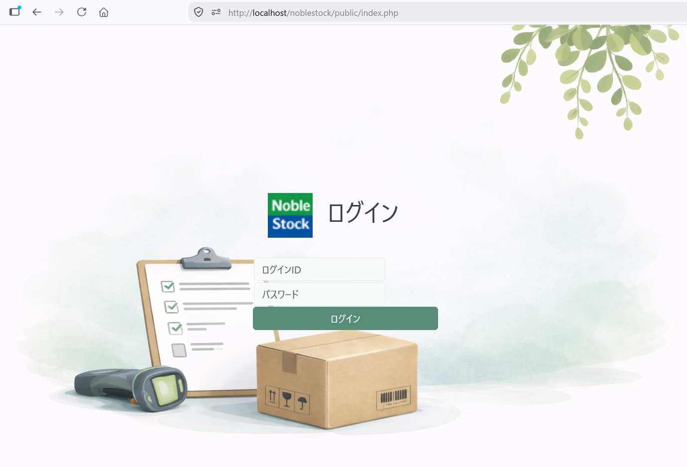

Chandraを使ったWebアプリケーションのテストガイド
1 Webアプリケーションのテストについて
このドキュメントでは、Chandraを使って作成したWebアプリケーションをPHPUnitでテストする方法を紹介します。NobleStockを題材に、アプリに実装した入力チェック、データの保存、画面遷移、アクセス制御などが期待どおりに動作することを確認します。Chandraを利用する処理も、アプリ側の設定や呼び出しを含めてテストします。
ハンズオン（ ./handson.html ）では、CMSを作成しながら、各機能のテストをテストファーストで追加しました。このドキュメントでは、テストを対象機能別に整理し、以下の3種類に大別して解説します。
| 種類 | NobleStockで確認する内容 |
|---|---|
| 単体テスト | メソッドの戻り値、例外、Databaseとのやり取り |
| データベース結合テスト | 実DBへの登録・更新・削除、ユーザーデータの監査情報 |
| HTTP機能テスト | 画面遷移、フォーム処理、セッション、権限、CSRF対策 |
2 PHPUnitを準備する
PHPのテストが行えるように準備します。
ComposerでPHPUnitと、HTTP機能テストに使うSymfony BrowserKit・HttpClient・Mimeをインストールします。BrowserKitでフォームやCookieを扱い、HttpClientでHTTP通信を行います。Mimeはフォームなどのリクエスト本文の組み立てに使用します。
ターミナルから、対象のプロジェクトの直下のディレクトリに移動し、以下のcomposerコマンドを実行します。
composer require --dev phpunit/phpunit symfony/browser-kit symfony/http-client symfony/mime
composer.jsonのrequire-devにこれらのパッケージが追加されます。
テストクラスでも名前空間を利用できるように、autoload-devも追加します。Noblestock\Tests\名前空間を、testsディレクトリへ対応させます。
以下はcomposer.jsonの抜粋です。require-devとautoload-devについて確認してください。
{
"name": "studiogau/noblestock",
"require": {
"studiogau/chandra": "^0.2.0"
},
"require-dev": {
"phpunit/phpunit": "^11.5",
"symfony/browser-kit": "^7.4",
"symfony/http-client": "^7.4",
"symfony/mime": "^7.4"
},
"autoload-dev": {
"psr-4": {
"Noblestock\\Tests\\": "tests/"
}
}
}
autoload-devを追加または変更したあとは、オートローダーを再生成します。
composer dump-autoload
次にプロジェクトのルートにphpunit.xmlを作成します。これはPHPUnit 実行時に参照される設定ファイルです。
<?xml version="1.0" encoding="UTF-8"?>
<phpunit bootstrap="vendor/autoload.php" colors="true">
<testsuites>
<testsuite name="default">
<directory>tests</directory>
</testsuite>
</testsuites>
</phpunit>
疎通確認用にテストクラスを作成します。testsディレクトリに、SampleTest.phpファイルを作成します。
<?php
declare(strict_types=1);
use PHPUnit\Framework\TestCase;
final class SampleTest extends TestCase
{
/**
* PHPUnitでテストを実行できることを確認する。
*/
public function test_phpunit_is_working(): void
{
$this->assertTrue(true);
}
}
PHPUnitを実行してみましょう。ターミナルから対象のプロジェクトの直下のディレクトリに移動し、以下のコマンドを実行します。
vendor\bin\phpunit
または
vendor\bin\phpunit tests/SampleTest.php
テスト結果が
OK (1 test, 1 assertion)
のように表示されます。
3 テスト環境を分離する
構成
テストでは、データの登録・更新・削除を繰り返します。開発中のデータを変更しないよう、テスト専用のデータベースを用意することをおすすめします。 このドキュメントでは、NobleStock（https://github.com/learnchi/noblestock）と同一の以下のプロジェクトを使用して、開発用データベースから独立したデータベーステストを実践していきます。
C:\xampp\htdocs\noblestock
├─config
├─public
├─tests
└─vendor
データベースは開発用に作成したものと別に、テスト用のものをあらかじめ作成します。
開発時
- サイトのURL: http://localhost/noblestock/public/
- DB接続先: noblestock
テスト時
- サイトのURL: http://localhost/noblestock/public/
- DB接続先: noblestock_test
このほか、WebサーバのvirtualHostを設定したりPHP組み込みサーバを使用することでURLも分ける方法、環境変数によりDB接続先を振り分ける方法が考えられます。それぞれ「付録」で紹介します。本文では、DB接続設定（config/dbconfig.ini）を変更するのみの、最も簡易な方法で進めます。
テスト用データベースを作成する
まず、次のSQLを実行してテスト用データベースを作成します。
CREATE DATABASE IF NOT EXISTS noblestock_test
DEFAULT CHARACTER SET utf8mb4
COLLATE utf8mb4_unicode_ci;
次に、テスト用のテーブルをコードから自動作成するためのSQLファイルを用意します。doc/create_db_tables.sql ( https://github.com/learnchi/noblestock/blob/main/doc/create_db_tables.sql ) をコピーし、以下のファイル名で保存してください。
tests/Fixtures/schema.sql
このschema.sqlでは、テスト用データベースの既存テーブルをデータごと削除して作り直します。その後、別途用意するtestdata.sqlでテスト用データを登録します。
テスト時に繰り返し実行する想定となるため、このSQLファイルを以下の通り編集します。
CREATE DATABASE文を削除USE noblestock;をUSE noblestock_test;へ変更
※ 各テーブルのDROP TABLE IF EXISTS文とCREATE TABLE文は、そのまま残してください。
schema.sqlの冒頭は次のようになります。
USE noblestock_test;
DROP TABLE IF EXISTS users;
CREATE TABLE users (
-- 元ファイルの列定義・制約を記述
);
-- 以降も各テーブルのDROP TABLE文とCREATE TABLE文を記述
開発用とテスト用のDB設定を作成する
データベース設定は、config\dbconfig.sample.ini から、 config\dbconfig.ini を作成することを前提にしています。本ドキュメントでは、DB接続設定を、開発用とテスト用に分けます。
config
├─dbconfig.development.ini
├─dbconfig.ini
├─dbconfig.sample.ini
└─dbconfig.test.ini
dbconfig.development.iniは、開発用DBを指定します。
dbhost=127.0.0.1
dbport=3306
dbuser=root
dbpass=ここに自分で設定したパスワード
dbname=noblestock
dbconfig.test.iniは、テスト用DBを指定します。
dbhost=127.0.0.1
dbport=3306
dbuser=root
dbpass=ここに自分で設定したパスワード
dbname=noblestock_test
dbconfig.iniは、アプリケーションが実際に読み込む設定です。通常は、開発用設定と同じ内容にします。アプリケーションは、これまでどおりdbconfig.iniを読み込みます。
アプリケーション内でのデータベース接続の例
$database = Database::fromConfiguredSource(dirname(__DIR__, 1) . "/config/dbconfig.ini", $logger);
アプリ側で開発用とテスト用を切り替える処理を追加せずに、どちらをdbconfig.iniへコピーするかを、テスト実行スクリプトが管理します。のちほど紹介します。
設定ファイルを公開してしまわないよう、.gitignoreを設定します。
# 環境設定
.env
dbconfig.ini
dbconfig.test.ini
dbconfig.development.ini
mailconfig.ini
テスト用データを用意する
テスト用データは、doc\testdata.sql ( https://github.com/learnchi/noblestock/blob/main/doc/testdata.sql ) を使用します。テスト用データベースに実際にデータを挿入するのは、テスト実行スクリプトです。のちほど紹介します。
doc\testdata.sqlの冒頭
INSERT INTO categories (id, ...
usersテーブルに挿入するテストユーザーには、テスト専用と分かる固定パスワードを使用します。doc\testdata.sqlでは以下のパスワードを設定しています。
- 通常ユーザー4件（
admin、user1～user3）：login_id + "000" - 権限確認用21件（
noauth、perm00～perm19）：login_id + "00"
このパスワードを開発環境や本番環境で使用しないよう注意してください。
テスト用パスワードのハッシュは、次のコマンドで作成し、変更することができます。以下は文字列「admin1234」に対するハッシュ値を出力するコマンドです。
php -r "echo password_hash('admin1234', PASSWORD_DEFAULT), PHP_EOL;"
出力された値を、password_hashへ設定します。
テスト用データは繰り返し使用することを想定し、以下のようにファイル保存します。
tests/Fixtures/testdata.sql
4 単体テストを書く
この章では、最もミニマルなメソッドのひとつ、util\UtilCommon.phpのisValidPasswordメソッド、および、例外が発生するメソッドのひとつ、dblogic\Category.phpのinsertメソッドをテストしながら、次のような処理をテストします。
- 入力値に対する戻り値
- 最小値や最大値などの境界値
- 不正な入力に対する例外
Databaseから返される値を使った処理
テスト対象
/**
* 新規設定用パスワードの妥当性を確認する。
* 8～128文字を許容し、制御文字は受け付けない。
*/
public static function isValidPassword(mixed $value, int $min = 8, int $max = 128): bool
{
if (!is_string($value)) {
return false;
}
$length = mb_strlen($value, 'UTF-8');
if ($length < $min || $length > $max) {
return false;
}
return preg_match('/[\x00-\x1F\x7F]/u', $value) !== 1;
}
テストクラスの基本
次のテストファイルを作成します。
tests/Util/UtilCommonTest.php
UtilCommonクラスに対応してUtilCommonTestクラスを作成し、isValidPasswordの正常系テストメソッドを1つ追加します。
<?php
declare(strict_types=1);
use Noblestock\Util\UtilCommon;
use PHPUnit\Framework\TestCase;
use PHPUnit\Framework\Attributes\DataProvider;
final class UtilCommonTest extends TestCase
{
/**
* UtilCommon::isValidPasswordが有効なパスワードを受理することを確認するテスト
*/
public function testValidPasswordIsAccepted(): void
{
$password = 'phpunit-password';
$actual = UtilCommon::isValidPassword($password);
$this->assertTrue($actual);
}
}
PHPUnitのTestCaseを継承し、testで始まる名前のテストメソッドを定義します。
ターミナルから以下のコマンドを実行して、テストを実施します。
vendor\bin\phpunit tests\Util\UtilCommonTest.php
次のような表示を確認します。
OK (1 test, 1 assertion)
このテストでは、アサーションassertTrue()を使って、UtilCommon::isValidPassword()がtrueを返すことを確認しています。以降の例では、falseの確認にassertFalse()、値と型の一致の確認にassertSame()も使用します。
正常系をテストする
UtilCommon::isValidPassword()に対応する正常系テストメソッドをもう1つ追加します。
public function testPasswordWithSymbolsIsAccepted(): void
{
$password = 'safe-P@ssword';
$actual = UtilCommon::isValidPassword($password);
$this->assertTrue($actual);
}
境界値をテストする
UtilCommon::isValidPassword()が、8文字と128文字を許可し、範囲外の7文字と129文字を拒否することを確認します。
/**
* UtilCommon::isValidPasswordが7文字のパスワードを拒否することを確認するテスト
*/
public function testSevenCharacterPasswordIsRejected(): void
{
$password = str_repeat('a', 7);
$actual = UtilCommon::isValidPassword($password);
$this->assertFalse($actual);
}
/**
* UtilCommon::isValidPasswordが8文字のパスワードを受理することを確認するテスト
*/
public function testEightCharacterPasswordIsAccepted(): void
{
$password = str_repeat('a', 8);
$actual = UtilCommon::isValidPassword($password);
$this->assertTrue($actual);
}
/**
* UtilCommon::isValidPasswordが128文字のパスワードを受理することを確認するテスト
*/
public function test128CharacterPasswordIsAccepted(): void
{
$password = str_repeat('a', 128);
$actual = UtilCommon::isValidPassword($password);
$this->assertTrue($actual);
}
/**
* UtilCommon::isValidPasswordが129文字のパスワードを拒否することを確認するテスト
*/
public function test129CharacterPasswordIsRejected(): void
{
$password = str_repeat('a', 129);
$actual = UtilCommon::isValidPassword($password);
$this->assertFalse($actual);
}
データプロバイダーを使う
先ほどの境界値テストを、DataProvider属性で指定したデータプロバイダーを使ってまとめた例です。UtilCommonTestを次の内容に置き換え、制御文字を含むパスワードの確認も加えます。
<?php
declare(strict_types=1);
use Noblestock\Util\UtilCommon;
use PHPUnit\Framework\TestCase;
use PHPUnit\Framework\Attributes\DataProvider;
final class UtilCommonTest extends TestCase
{
#[DataProvider('passwordProvider')]
public function testPasswordValidity(
string $password,
bool $expected
): void {
$actual = UtilCommon::isValidPassword($password);
$this->assertSame($expected, $actual);
}
/**
* パスワードの境界値と制御文字を含む入力、期待する判定結果を返す。
*/
public static function passwordProvider(): iterable
{
yield '7文字は短すぎる' => [
str_repeat('a', 7),
false,
];
yield '8文字は許可される' => [
str_repeat('a', 8),
true,
];
yield '128文字は許可される' => [
str_repeat('a', 128),
true,
];
yield '129文字は長すぎる' => [
str_repeat('a', 129),
false,
];
yield '制御文字は許可されない' => [
"password\n",
false,
];
}
}
DataProvider属性でpasswordProvider()を指定します。各配列の値が、テストメソッドの$passwordと$expectedへ順に渡されます。
例外をテストする
NobleStockのCategory::insert()は、カテゴリーIDが指定されていない場合にInvalidArgumentExceptionを投げます。このメソッドについて単体テストを追加して、例外の種類とメッセージを確認します。
tests/DbLogic/CategoryTest.phpを作成し、以下の通り追記します。
<?php
declare(strict_types=1);
use Noblestock\DbLogic\Category;
use PHPUnit\Framework\TestCase;
use Studiogau\Chandra\Database\Database;
use Studiogau\Chandra\Logging\Logger;
final class CategoryTest extends TestCase
{
/**
* カテゴリの登録時にIDを省略すると例外になることを確認する。
*/
public function testInsertThrowsExceptionWhenIdIsMissing(): void
{
$database = $this->createStub(Database::class);
$logger = $this->createStub(Logger::class);
$category = new Category($database, $logger);
$this->expectException(
\InvalidArgumentException::class
);
$this->expectExceptionMessage(
'Required parameter missing: id'
);
$category->insert([
'category_name' => '食品',
]);
}
}
例外が発生する処理である、Category::insert()を呼び出す前に、expectException()で例外の種類、expectExceptionMessage()でメッセージを指定します。
Databaseクラスをスタブに置き換える
スタブとは、テスト対象が必要とするオブジェクトの代わりに渡す、テスト用の代替オブジェクトです。
NobleStockのCategoryは、コンストラクタからDatabaseとLoggerを受け取ります。
public function __construct(
?Database $database = null,
?Logger $logger = null
)
通常の実行では、それぞれ目的に合ったDB接続あるいはロガーのインスタンスを指定するか、省略して既定のインスタンスを使用することになります。
このテストでは入力値の検証だけを確認するため、実際のデータベースやログファイルは使用しません。代わりに、PHPUnitのcreateStub()を使って、DatabaseとLoggerのスタブを作成します。
$database = $this->createStub(Database::class);
$logger = $this->createStub(Logger::class);
今回のCategory::insert()は、メソッドの入り口でカテゴリーIDを検証します。そのため、入力値の検証だけをテストする場合、スタブへDBの戻り値を設定する必要はありません。
また、Logger::error()は呼び出されますが、スタブへ渡された呼び出しは実際のログ出力にはつながりません。
スタブから特定の値を返したい場合は、method()とwillReturn()を使って戻り値を指定できます。
$database = $this->createStub(Database::class);
$database
->method('fetchList')
->willReturn([
[
'id' => 1,
'category_name' => '食品',
],
]);
この場合、テスト対象がfetchList()を呼び出すと、実際のSQLは実行されず、willReturn()で指定した配列が返されます。
Databaseクラスをモックに置き換える
呼び出し回数や引数も検証したい場合は、createStub()ではなく、createMock()を使用します。
Category::list()からDatabase::fetchList()へ渡されるSQLと呼び出し回数を、createMock()を使って確認します。CategoryTestへ次のメソッドを追加します。
/**
* DBから取得したカテゴリの一覧が返されることを確認する。
*/
public function testCategoryListReturnsRowsFromDatabase(): void
{
$expected = [
[
'id' => 1,
'category_name' => '食品',
'remarks' => null,
],
];
$database = $this->createMock(Database::class);
$database
->expects($this->once())
->method('fetchList')
->with(
$this->stringContains('FROM categories')
)
->willReturn($expected);
$logger = $this->createStub(Logger::class);
$category = new Category(
$database,
$logger
);
$actual = $category->list();
$this->assertSame($expected, $actual);
}
この例では、次の設定でDatabase::fetchList()の呼び出しを確認します。
| 設定 | 確認・指定する内容 |
|---|---|
expects($this->once()) |
呼び出しが1回であること |
method('fetchList') |
設定対象のメソッド |
with($this->stringContains('FROM categories')) |
SQLに対象テーブルが含まれること |
willReturn($expected) |
DBの代わりに返す配列 |
Category::list()がこの配列を返すことを確認します。実際のSQLやトランザクションの動作は、次章以降のDB結合テストで扱います。
5 データベーステストを準備する
この章では、テスト用データベースnoblestock_testへ接続する準備をします。第6章ではDbLogic/User.phpの取得・登録・更新・削除と監査列をテストし、第7章ではデータベース制約の確認方針を説明します。
設定ファイルとテストデータを用意する
第3章で用意した設定ファイルとSQLファイルを使用します。
| ファイル | 用途 |
|---|---|
config/dbconfig.ini |
アプリが読み込むDB接続設定 |
config/dbconfig.test.ini |
テスト用DBへの接続設定 |
tests/Fixtures/schema.sql |
テスト用テーブルの削除と再作成 |
tests/Fixtures/testdata.sql |
共通の初期データの登録 |
SQLファイルの作成方法は、[[#テスト用データベースを作成する]]と[[#テスト用データを用意する]]を参照してください。
NobleStockはdbconfig.iniから接続先を読み込みます。テスト開始前にこのファイルをバックアップし、dbconfig.test.iniの内容へ差し替えます。テスト終了後はバックアップから元の設定へ戻します。この一連の処理をtests/run.phpにまとめます。
テスト実行スクリプトを作成する
テスト用DB設定への切り替え、データベースの初期化、PHPUnitの実行、設定の復元を行うスクリプトをtests/run.phpにまとめて作成します。
tests/run.phpの作成
プロジェクトのtests/run.phpに、次の内容を記述します。
<?php
declare(strict_types=1);
// 設定ファイルのパスを定義
$projectRoot = dirname(__DIR__);
$activeConfig = $projectRoot . '/config/dbconfig.ini';
$testConfig = $projectRoot . '/config/dbconfig.test.ini';
$backupConfig = $projectRoot . '/config/dbconfig.phpunit.bak';
$restored = false;
// 前回の異常終了で残った設定を復元
if (is_file($backupConfig)) {
if (!copy($backupConfig, $activeConfig)) {
throw new RuntimeException(
'Failed to restore the previous DB config.'
);
}
if (!unlink($backupConfig)) {
throw new RuntimeException(
'Failed to remove the previous DB config backup.'
);
}
}
// 設定ファイルの存在確認
if (!is_file($activeConfig)) {
throw new RuntimeException(
'dbconfig.ini was not found.'
);
}
if (!is_file($testConfig)) {
throw new RuntimeException(
'dbconfig.test.ini was not found.'
);
}
// 現在の設定をバックアップ
if (!copy($activeConfig, $backupConfig)) {
throw new RuntimeException(
'Failed to back up dbconfig.ini.'
);
}
// 設定を復元する処理
$restoreConfig = static function () use (
$activeConfig,
$backupConfig,
&$restored
): void {
if ($restored) { // 2回目以降の呼び出しは無視
return;
}
if (!is_file($backupConfig)) {
throw new RuntimeException('DB config backup was not found.');
}
// 失敗時は未復元のままにして、終了処理での再試行を可能にする。
if (!copy($backupConfig, $activeConfig)) {
throw new RuntimeException('Failed to restore dbconfig.ini.');
}
if (!unlink($backupConfig)) {
throw new RuntimeException('Failed to remove the DB config backup.');
}
$restored = true;
};
// スクリプト終了時に実行するよう登録
register_shutdown_function($restoreConfig);
// テスト用設定へ切り替え
if (!copy($testConfig, $activeConfig)) {
throw new RuntimeException(
'Failed to activate dbconfig.test.ini.'
);
}
// テスト用設定を読み込み
$config = parse_ini_file(
$testConfig,
false,
INI_SCANNER_RAW
);
if ($config === false) {
throw new RuntimeException(
'Failed to read dbconfig.test.ini.'
);
}
// 接続先を確認
if (
($config['dbname'] ?? '')
!== 'noblestock_test'
) {
throw new RuntimeException(
'Test database name must be noblestock_test.'
);
}
// 設定からDSNを作成
$dsn = sprintf(
'mysql:host=%s;port=%s;dbname=%s;charset=utf8mb4',
$config['dbhost'],
$config['dbport'] ?? '3306',
$config['dbname']
);
// テスト用DBへ接続
$pdo = new PDO(
$dsn,
$config['dbuser'],
$config['dbpass'],
);
// テーブルとテストデータを初期化
$fixtureFiles = [
$projectRoot . '/tests/Fixtures/schema.sql',
$projectRoot . '/tests/Fixtures/testdata.sql',
];
// sqlファイルを順番に実行
foreach ($fixtureFiles as $fixtureFile) {
if (!is_file($fixtureFile)) {
throw new RuntimeException('Fixture was not found: ' . $fixtureFile);
}
$sql = file_get_contents($fixtureFile);
if ($sql === false) {
throw new RuntimeException('Failed to read: ' . $fixtureFile);
}
$pdo->exec($sql);
}
// PHPUnitのパスを取得
$phpunit = $projectRoot . '/vendor/bin/phpunit';
// 引数をエスケープしてコマンドに追加
$arguments = array_map(
'escapeshellarg',
array_slice($argv, 1)
);
// コマンドの組み立て
$command = escapeshellarg(PHP_BINARY)
. ' '
. escapeshellarg($phpunit)
. ' --configuration '
. escapeshellarg(
$projectRoot . '/phpunit.xml'
);
if ($arguments !== []) {
$command . = ' ' . implode(
' ',
$arguments
);
}
// PHPUnitを実行
passthru($command, $exitCode);
// 開発用設定へ戻す
$restoreConfig();
// PHPUnitの終了コードを返す
exit($exitCode);
テスト終了時のデータベース設定の復元
tests/run.phpでは、PHPUnitテストが失敗した場合も、dbconfig.iniをテスト開始前の接続設定へ戻します。これにより、テスト終了後は通常の開発用データベースを使用できます。
register_shutdown_function()にも復元処理を登録し、途中でエラーが発生した場合に備えます。コピーやバックアップの削除に失敗した場合は、復元済みにせず例外を投げます。強制終了などでバックアップが残った場合は、次回の実行開始時に復元します。
同じプロジェクトで複数のtests/run.phpを同時に実行しないでください。また、設定を共有するため、テスト中はブラウザーから通常の開発操作を行わないようにします。
テスト実行スクリプトの実行
tests/run.phpは、プロジェクトのルートディレクトリから、vendor\bin\phpunitコマンドに代えて実行することを想定しています。引数はPHPUnitへ引き渡されます。
# スクリプトの動作を確認する
php tests/run.php tests/SampleTest.php
終了後にdbconfig.iniが元へ戻っていること、dbconfig.phpunit.bakが残っていないことを確認します。noblestock_testにはテーブルと初期データが作成され、開発用DBは変更されていないことも確認してください。
# すべてのテストを実行する
php tests/run.php
特定のテストファイルだけを実行する場合は、tests/run.phpに続けて、テストファイルのパスを指定します。
# 特定のテストファイルを実行する
php tests/run.php tests/DbLogic/UserDatabaseTest.php
PHPUnitのオプションも渡すことができます。
# テストメソッドを指定する
php tests/run.php --filter testExistingUserCanBeSelected
データベーステストクラスを作成する
Userクラス(dblogic\User.php)のデータベース結合テストを、
tests/DbLogic/UserDatabaseTest.phpとして作成します。
PHPUnitのTestCaseには、準備と後片付けを行う次のメソッドがあります。Userのメソッドをテストする前に、これらのテンプレートメソッドを利用して、DB接続とテストデータの後片付けを用意します。
| メソッド | 呼ばれるタイミング | このテストで行う処理 |
|---|---|---|
setUpBeforeClass() |
クラスの最初のテストより前に1回 | DBへ接続し、接続先を確認する |
setUp() |
各テストの前 | Userを作成し、監査列用のユーザーIDを設定してトランザクションを開始する |
tearDown() |
各テストの後 | 変更をロールバックする |
tearDownAfterClass() |
クラスの最後のテストより後に1回 | 残ったトランザクションがあればロールバックし、共有DB接続の参照を解放する |
<?php
declare(strict_types=1);
namespace Noblestock\Tests\DbLogic;
use LogicException;
use Noblestock\DbLogic\User;
use PDO;
use PHPUnit\Framework\TestCase;
use RuntimeException;
use Studiogau\Chandra\Database\Database;
use Studiogau\Chandra\Logging\Logger;
final class UserDatabaseTest extends TestCase
{
private static ?Database $database = null;
private ?User $user = null;
/**
* このクラスの最初のテストより前に1回だけ呼ばれる。
* テスト用データベースへ接続し、接続先がnoblestock_testであることを確認する。
*/
public static function setUpBeforeClass(): void
{
self::$database = Database::fromConfiguredSource(
dirname(__DIR__, 2) . '/config/dbconfig.ini'
);
$pdo = self::$database->getConnection()->getPdo();
$databaseName = $pdo->query('SELECT DATABASE()')->fetchColumn();
// 開発用DBでテストを実行しないよう、接続先を確認する。
if ($databaseName !== 'noblestock_test') {
self::$database = null;
throw new RuntimeException('Tests must use noblestock_test.');
}
}
/**
* 各テストメソッドの実行前に呼ばれる。
* Userを作成し、トランザクションを開始する。
*/
protected function setUp(): void
{
if (self::$database === null) {
throw new LogicException('Test database is not initialized.');
}
$logger = $this->createStub(Logger::class);
$this->user = new User(self::$database, $logger);
self::$database->setCurrentUserId('phpunit');
self::$database->getConnection()->begin();
}
/**
* 各テストメソッドの実行後に呼ばれる。
* テスト中に行った登録、更新、削除をロールバックする。
*/
protected function tearDown(): void
{
if (self::$database === null) {
return;
}
$connection = self::$database->getConnection();
if ($connection->getPdo()->inTransaction()) {
$connection->rollback();
}
$this->user = null;
}
/**
* このクラスのすべてのテストが終了したあとに1回だけ呼ばれる。
* 共有していたDatabaseを解放する。
*/
public static function tearDownAfterClass(): void
{
if (self::$database !== null) {
$connection = self::$database->getConnection();
if ($connection->getPdo()->inTransaction()) {
$connection->rollback();
}
}
self::$database = null;
}
}
第2章のautoload-dev設定に合わせ、このクラスはnamespace Noblestock\Tests\DbLogic;で名前空間を宣言します。
setUpBeforeClass()で接続先を確認するのは、誤ってPHPUnitを直接実行した場合に、開発用DBのデータを変更しないためです。DBを使うテストはtests/run.php経由で実行してください。
setUp()では共有のDatabaseを使ってUserを作成します。ログ出力は確認対象に含めないため、Loggerはスタブにします。setCurrentUserId('phpunit')は、監査列へ記録するユーザーIDの指定です。
第6章のテストでは、このトランザクション内で専用データを登録・更新・削除します。tearDown()でロールバックするため、次のテストへ変更が残りません。共通のtestdata.sqlは書き換えず、各テストで必要なデータはテストメソッド内で登録します。
テストメソッド内ではCREATE TABLEやDROP TABLEを実行しないでください。これらのDDLは暗黙的なコミットを伴うため、テーブルの作成はtests/run.phpでPHPUnitの起動前に済ませます。HTTP機能テストの後片付けは、接続が異なるため第9章で別に扱います。
6 データの取得・登録・更新・削除をテストする
データの取得をテストする
tests/DbLogic/UserDatabaseTest.phpに、以下のテストケースを追加し、初期データとして登録されているユーザーを取得します。
/**
* 既存のユーザーを選択できることを確認する。
*/
public function testExistingUserCanBeSelected(): void
{
$actual = $this->user->select(1);
$this->assertSame(1, (int) $actual['id']);
$this->assertSame('admin', $actual['login_id']);
$this->assertSame('管理者がう', $actual['user_name']);
}
データの登録をテストする
tests/DbLogic/UserDatabaseTest.phpに、以下のテストケースを追加し、新しいユーザーを登録します。
/**
* 新しいユーザーを登録できることを確認する。
*/
public function testUserCanBeInserted(): void
{
$affected = $this->user->insert([
'login_id' => 'phpunit-user',
'password_hash' => 'phpunit-password',
'user_name' => 'PHPUnitユーザー',
'furigana' => 'ピイチピイユニットユーザー',
'email' => 'phpunit@example.test',
'authority' => 'user',
'sort_order' => 999,
]);
$this->assertSame(1, $affected);
$id = (int) self::$database->getConnection()->getPdo()->lastInsertId();
$actual = $this->user->select($id);
$this->assertSame('phpunit-user', $actual['login_id']);
$this->assertSame('PHPUnitユーザー', $actual['user_name']);
$this->assertSame('phpunit@example.test', $actual['email']);
$this->assertTrue(password_verify('phpunit-password', $actual['password_hash']));
}
このテストケースでは、最初に、User::insert()の戻り値を確認します。戻り値が1であれば、SQLによって1件のレコードが登録されたことを表します。
続いて登録したデータを取得し、保存された値を確認します。
AUTO_INCREMENTで採番された値の確認
users.idにはテーブル定義でAUTO_INCREMENTが設定されています。このため、User::insert()へIDを渡さなくても、データベースが新しいIDを採番します。
採番されたIDは、PDOのlastInsertId()で取得できます。AUTO_INCREMENTで採番されるIDは実行状況によって変わるため、特定の値になることは前提にしません。本テストでは、取得したIDを使って、登録したデータを検索しています。
ハッシュ化されたパスワードの確認
パスワードはハッシュ化して保存されるため、password_verify()を使用して、登録時のパスワードと保存されたハッシュ値が対応していることを確認します。
データの更新をテストする
ユーザーの更新テストでは、まず更新対象のユーザーを登録し、それから更新を行って結果を検証します。tests/DbLogic/UserDatabaseTest.phpに、以下のプライベートメソッドを追加し、テスト対象のユーザーを登録する処理を記述します。
/**
* テスト対象となるユーザーを登録し、データベースが採番したIDを返す。
*/
private function insertTestUser(): int
{
$this->user->insert([
'login_id' => 'phpunit-user',
'password_hash' => 'phpunit-password',
'user_name' => 'PHPUnitユーザー',
'furigana' => 'ピイチピイユニットユーザー',
'email' => 'phpunit@example.test',
'authority' => 'user',
'sort_order' => 999,
]);
return (int) self::$database->getConnection()->getPdo()->lastInsertId();
}
tests/DbLogic/UserDatabaseTest.phpに、以下のテストケースを追加し、ユーザーの名前とメールアドレスの更新を行い、結果を検証します。
/**
* 既存のユーザーを更新できることを確認する。
*/
public function testUserCanBeUpdated(): void
{
// テスト対象となるユーザーを登録し、IDを取得する
$id = $this->insertTestUser();
$affected = $this->user->update([
'id' => $id,
'user_name' => '更新後ユーザー',
'email' => 'updated@example.test',
]);
$this->assertSame(1, $affected);
$actual = $this->user->select($id);
$this->assertSame('更新後ユーザー', $actual['user_name']);
$this->assertSame('updated@example.test', $actual['email']);
}
テスト終了後にはトランザクションがロールバックされるため、登録と更新の両方が取り消されます。
ユーザーの登録・更新で監査情報が保存されることを確認する
ユーザーを登録・更新したときに、作成者・更新者と処理日時がusersテーブルへ保存されることを確認します。対象はNobleStockのUser::insert()とUser::update()です。これらの処理では、ChandraのDatabaseによる監査列の自動設定を利用します。
tests/DbLogic/UserDatabaseTest.phpに、以下のテストケースを追加し、登録時の監査列をテストします。
/**
* ユーザー登録で、指定した操作ユーザーと処理日時が保存されることを確認する。
*/
public function testUserInsertStoresAuditInformation(): void
{
// テスト対象となるユーザーを登録し、IDを取得する
$id = $this->insertTestUser();
// 監査カラムを直接取得して確認する
$sql = "SELECT created_at,created_by,updated_at,updated_by FROM users WHERE id = :id";
$actual = self::$database->fetchOne($sql,
[
':id' => ['value' => $id, 'datatype' => PDO::PARAM_INT,],
]
);
$this->assertSame('phpunit', $actual['created_by']);
$this->assertSame('phpunit', $actual['updated_by']);
// YYYY-MM-DD HH:MM:SSフォーマットであることを確認する
$this->assertMatchesRegularExpression('/^\d{4}-\d{2}-\d{2} \d{2}:\d{2}:\d{2}$/', $actual['created_at']);
$this->assertMatchesRegularExpression('/^\d{4}-\d{2}-\d{2} \d{2}:\d{2}:\d{2}$/', $actual['updated_at']);
}
現在のUser::select()は監査列を取得しないため、監査列のテストではDatabase::fetchOne()を使って直接取得します。
tests/DbLogic/UserDatabaseTest.phpに、以下のテストケースを追加します。更新時には、作成者と作成日時が変更されず、更新者が設定されることを確認します。
/**
* ユーザー更新で、作成情報が保持され、更新者と更新日時が保存されることを確認する。
*/
public function testUserUpdateStoresAuditInformation(): void
{
// テスト対象となるユーザーを登録し、IDを取得する
$id = $this->insertTestUser();
// 同じ秒の更新でも更新漏れを検出できるよう、PDOで古い日時を設定する。
$oldUpdatedAt = '2000-01-01 00:00:00';
$pdo = self::$database->getConnection()->getPdo();
$statement = $pdo->prepare('UPDATE users SET updated_at = :updated_at WHERE id = :id');
$statement->execute([
':updated_at' => $oldUpdatedAt,
':id' => $id,
]);
// 更新前の監査カラムを取得
$sql = "SELECT created_at,created_by,updated_at,updated_by FROM users WHERE id = :id";
$before = self::$database->fetchOne($sql,
[
':id' => ['value' => $id, 'datatype' => PDO::PARAM_INT,],
]
);
$this->assertSame($oldUpdatedAt, $before['updated_at']);
// 更新するユーザーを変更する
self::$database->setCurrentUserId('phpunit-update');
$this->user->update(['id' => $id, 'user_name' => '更新後ユーザー',]);
// 更新後の監査カラムを取得
$after = self::$database->fetchOne($sql,
[
':id' => ['value' => $id, 'datatype' => PDO::PARAM_INT,],
]
);
$this->assertSame($before['created_at'], $after['created_at']);
$this->assertSame($before['created_by'], $after['created_by']);
$this->assertMatchesRegularExpression('/^\d{4}-\d{2}-\d{2} \d{2}:\d{2}:\d{2}$/', $after['updated_at']);
$this->assertGreaterThan($before['updated_at'], $after['updated_at']);
$this->assertSame('phpunit-update', $after['updated_by']);
}
このアプリの監査列は秒単位で日時を記録するため、登録直後に更新すると、更新前後で同じ日時になることがあります。
そこで、このテストでは更新前のupdated_atを古い固定日時に変更します。準備には、監査列を自動設定するDatabase::update()を使わず、PDOで直接SQLを実行します。
その後、User::update()を実行し、created_atとcreated_byが変更されていないこと、updated_byに更新者が設定されることを確認します。updated_atについては、所定の日時形式であり、更新前の固定日時より新しくなっていることを確認します。これにより、更新日時の設定漏れを検出します。
データの削除をテストする
tests/DbLogic/UserDatabaseTest.phpに、以下のテストケースを追加して、テスト用ユーザーの削除処理を確認します。
/**
* 既存のユーザーを削除できることを確認する。
*/
public function testUserCanBeDeleted(): void
{
// テスト対象となるユーザーを登録し、IDを取得する
$id = $this->insertTestUser();
$affected = $this->user->delete($id);
$this->assertSame(1, $affected);
$count =
self::$database->fetchCount(
"SELECT COUNT(*)FROM users WHERE id = :id",
[':id' => ['value' => $id, 'datatype' => PDO::PARAM_INT,],]
);
$this->assertSame(0, $count);
}
削除件数だけでなく、データベースから対象のユーザーがなくなっていることも確認します。
7 データベース制約をテストする
NobleStockでは、users.login_idのUNIQUE制約でログインIDの重複を防ぎ、stocksの複合主キーで同じ商品・店舗の在庫レコードの重複を防いでいます。
制約を確認する場合は、同じログインIDで2件目のユーザーを登録し、UNIQUE制約によって拒否されることをテストします。
ユーザー登録画面にも重複チェックがあります。HTTP機能テストでは、重複時の入力エラーと、ユーザーが追加されていないことを確認します。事前チェック後の同時登録による重複はDBの制約で防ぐため、画面とDBそれぞれの動作を確認します。フォーム処理のテスト方法は第9章で扱います。
8 WebページをHTTP経由でテストする
前章までは、クラスやメソッドを直接呼び出すテストと、テスト用データベースへ接続するテストを作成しました。 この章では、Webサーバー上で動作するNobleStockへ実際にHTTPリクエストを送り、利用者がアクセスしたときに近い状態でテストします。
HTTP機能テストでは、次の一連の動作を確認します。
- PHPUnitからHttpClientを通じてHTTPリクエストを送信する
- Apacheがリクエストを受け取る
- 対象のPHPファイルが実行される
- PHPがHTMLやHTTPヘッダーを返す
- PHPUnitがレスポンスを検証する
クラスを直接呼び出す単体テストとは異なり、リクエストからレスポンスまでの流れを一貫して確認できます。
HTTP機能テストは、第2章でインストールしたSymfony BrowserKitとSymfony HttpClientを使用します。Symfony BrowserKitには、HTTP通信に対応したHttpBrowserクラスが含まれています。このクラスはWebサーバーへHTTPリクエストを送信したり、レスポンスやHTMLを調べたりするためのテスト用クライアントです。一般的なWebブラウザーとは異なり、JavaScriptを実行したり画面を描画したりはしません。JavaScriptによる画面操作や見た目そのものの確認は、このテストの対象外であることに注意してください。
HTTP機能テストは、次のディレクトリへ配置します。
tests
├─Database
├─DbLogic
├─Fixtures
├─Http
│ └─LoginPageTest.php
├─Util
└─run.php
この章では、ログイン前でも表示できるpublic/index.phpを最初のテスト対象にします。
テスト対象のWebサーバーを起動する
HTTP機能テストでは、テストコードとは別にWebサーバーが動作している必要があります。 XAMPP Control PanelからApacheを起動し、ブラウザーで次のURLを表示できることを確認してください。
http://localhost/noblestock/public/index.php

NobleStockのログイン画面が表示されれば準備完了です。tests/run.phpを使用する場合、接続先データベースが変更されます。テストの実行中にブラウザからのアクセスをすると、ブラウザからのアクセスもテスト用データベースになることに注意してください。
GETでログイン画面を表示する
tests/Http/LoginPageTest.phpを作成し、次のように記述します。
<?php
declare(strict_types=1);
namespace Noblestock\Tests\Http;
use PHPUnit\Framework\TestCase;
use Symfony\Component\BrowserKit\HttpBrowser;
final class LoginPageTest extends TestCase
{
// ローカル環境の公開URL。環境に合わせて変更する。
private const PUBLIC_URL = 'http://localhost/noblestock/public/';
private HttpBrowser $browser;
/**
* 各テストメソッドの実行前に呼ばれる。
* 新しいHTTPクライアントを作成し、Cookieやログイン状態を前のテストから引き継がない。
*/
protected function setUp(): void
{
$this->browser = new HttpBrowser();
}
/**
* ログイン画面が正常に表示されることを確認する。
*/
public function test_login_page_can_be_displayed(): void
{
$this->browser->request('GET', self::PUBLIC_URL . 'index.php');
$response = $this->browser->getInternalResponse();
// HTTPステータスを確認
$this->assertSame(200, $response->getStatusCode());
}
}
テストの実施は、tests/run.phpを経由します。
php tests/run . php tests/Http/LoginPageTest . php
テストに成功すると、次のような結果が表示されます。
OK (1 test, 1 assertion)
request()へHTTPメソッドとURLを渡すと、Webサーバーへリクエストを送信します。
request()から返される値は、HTMLを検索するためのCrawlerです。HTTPステータスやレスポンスヘッダーなどを調べる場合は、getInternalResponse()でレスポンスを取得します。
$response = $this->browser->getInternalResponse();
HTTPステータスを確認する
正常にページを表示できた場合、HTTPステータスコードは200になります。
// HTTPステータスを確認
$this->assertSame(200, $response->getStatusCode());
レスポンスヘッダーを確認する
ログイン画面がHTMLとして返されていることを確認します。先ほどのテストメソッドへ、次のアサーションを追加します。
HTTPレスポンスの中のレスポンスヘッダーには、返されたデータの種類、文字コード、Cookie、リダイレクト先などの情報が記録されています。ここではContent-Typeを確認します。
// Content-Typeを確認
$contentType = $response->getHeader('Content-Type');
$this->assertNotNull($contentType);
$this->assertStringStartsWith('text/html', strtolower($contentType));
Content-Typeにはcharset=UTF-8などが付く場合があるため、ヘッダーの存在を確認したうえで、text/htmlから始まることを検証します。
HTMLの内容を確認する
HTTP本文が期待通りの画面であることを確認するため、ログイン画面に固有の文字列、タイトル、フォームも確認します。
レスポンス本文を文字列として確認する
レスポンス本文は、getContent()で取得できます。
// レスポンス本文を文字列として確認
$html = $response->getContent();
$this->assertStringContainsString('ログイン', $html);
HTMLの要素を確認する
request()が返すCrawlerを使うと、XPath式でHTML要素を検索できます。
テストメソッドのrequest()部分を、返り値を受け取るように変更します。
$crawler = $this->browser->request('GET', self::PUBLIC_URL . 'index.php');
ログイン画面のタイトルとフォームを確認します。
// HTMLの要素を確認
$this->assertSame('ログイン | NobleStock', $crawler->filterXPath('//title')->text());
$this->assertCount(1, $crawler->filterXPath('//form[@name="login"]'));
タイトルの一致と、ログインフォームが1つ存在することを確認します。HTMLの詳しい調べ方は第12章を参照してください。
9 フォーム処理をテストする
前章では、GETでWebページへアクセスし、HTTPステータス、レスポンスヘッダー、HTMLの内容を確認しました。この章では、フォームからPOSTリクエストを送り、登録、更新、削除をテストします。
この章では、NobleStockのユーザー登録、更新、削除画面を題材にします。これらの画面はログイン後に利用するため、テストの準備として管理者ユーザーでログインします。ログイン処理やCookie、セッションについては、次章で詳しく確認します。
BrowserKitからフォームを送信する
BrowserKitでは、request()へPOSTメソッドと送信値を直接指定できます。
$this->browser->request(
'POST',
self::PUBLIC_URL . 'example.php',
[
'name' => 'テストデータ',
'mode' => 'insert',
]
);
ハンズオン（ ./handson.html ）では、この方法で送信値を指定しています。
このガイドでは、より利用者の操作に近いテストにするため、HTMLフォームを取得し、submit()で送信します。送信先やhidden項目は、取得したフォームの内容を使用します。
以下がその例です。
$crawler = $this->browser->request(
'GET',
self::PUBLIC_URL . 'user_create.php'
);
$form = $crawler
->selectButton('登録')
->form([
'login_id' => 'phpunitform01',
'password_hash' => 'phpunit-password',
'user_name' => 'HTTPテストユーザー',
'email' => 'phpunit@example.com',
'sort_order' => '9001',
]);
$crawler = $this->browser->submit($form);
selectButton('登録')->form()で登録ボタンのあるフォームを取得し、入力値を指定します。submit()はフォームのmethodとactionに従って送信します。
指定していない項目はHTMLの値を使用するため、NobleStockがhidden項目として出力するCSRFトークンも送信されます。対象フォームのCSRF対策が機能することの確認は第11章で扱います。HTMLのrequiredやJavaScriptによる入力検証は実行されません。
ユーザーフォームテストの共通部分を作る
tests/Http/UserFormTest.phpを作成します。
最初に、共通の準備と後片付けを用意します。各メソッドの役割は次のとおりです。
| メソッド | 役割 |
|---|---|
setUpBeforeClass() |
DBへ接続し、テスト用DBであることを確認する |
setUp() |
UserとHTTPクライアントを作成し、管理者としてログインする |
tearDown() |
テストで追加したユーザーを削除する |
tearDownAfterClass() |
共有DB接続の参照を解放する |
login() |
ログインフォームを送信し、ログイン成功を確認する |
rememberLoginId() |
後片付けで削除するユーザーのログインIDを記録する |
findUser() |
登録・更新・削除の結果をDBから取得する |
insertTestUser() |
更新・削除の対象となるユーザーを登録する |
openUserEditPage() |
ユーザー一覧の更新フォームを送信して編集画面を開く |
PHPUnitのTestCaseクラスが用意しているテンプレートメソッドについて、第5章で作成したtests/DbLogic/UserDatabaseTest.phpを参照してください。（[[#データベーステストクラスを作成する]]）
<?php
declare(strict_types=1);
namespace Noblestock\Tests\Http;
use LogicException;
use RuntimeException;
use Noblestock\DbLogic\User;
use PDO;
use PHPUnit\Framework\TestCase;
use Studiogau\Chandra\Database\Database;
use Studiogau\Chandra\Logging\Logger;
use Symfony\Component\BrowserKit\HttpBrowser;
use Symfony\Component\DomCrawler\Crawler;
final class UserFormTest extends TestCase
{
// ローカル環境の公開URL。環境に合わせて変更する。
private const PUBLIC_URL = 'http://localhost/noblestock/public/';
private static ?Database $database = null;
private HttpBrowser $browser;
private ?User $user = null;
/** @var list<string> */
private array $cleanupLoginIds = [];
// ---------- 共通処理 ----------
/**
* このクラスの最初のテストより前に1回だけ呼ばれる。
* テスト用データベースへ接続し、接続先がnoblestock_testであることを確認する。
*/
public static function setUpBeforeClass(): void
{
self::$database = Database::fromConfiguredSource(
dirname(__DIR__, 2) . '/config/dbconfig.ini'
);
$pdo = self::$database->getConnection()->getPdo();
$databaseName = $pdo->query('SELECT DATABASE()')->fetchColumn();
// 開発用DBでテストを実行しないよう、接続先を確認する。
if ($databaseName !== 'noblestock_test') {
self::$database = null;
throw new RuntimeException('Tests must use noblestock_test.');
}
}
/**
* 各テストメソッドの実行前に呼ばれる。
* 新しいHTTPクライアントを作成し、Cookieやログイン状態を前のテストから引き継がない。
* Userと削除対象の一覧を準備し、管理者でログインする。
*/
protected function setUp(): void
{
if (self::$database === null) {
throw new LogicException('Test database is not initialized.');
}
$logger = $this->createStub(Logger::class);
$this->user = new User(self::$database, $logger);
self::$database->setCurrentUserId('phpunit');
$this->browser = new HttpBrowser();
$this->cleanupLoginIds = [];
$this->login();
}
/**
* 各テストメソッドの実行後に呼ばれる。
* このテストで記録した専用ログインIDのユーザーを削除する。
*/
protected function tearDown(): void
{
if (self::$database === null) {
return;
}
$pdo = self::$database->getConnection()->getPdo();
$sql = 'DELETE FROM users WHERE login_id = :login_id';
$statement = $pdo->prepare($sql);
foreach (array_unique($this->cleanupLoginIds) as $loginId) {
$statement->execute([':login_id' => $loginId,]);
}
$this->user = null;
}
/**
* このクラスのすべてのテストが終了したあとに1回だけ呼ばれる。
* 共有していたDatabaseを解放する。
*/
public static function tearDownAfterClass(): void
{
self::$database = null;
}
/**
* 指定したユーザーでログインし、トップメニューが表示されたことを確認する。
*/
private function login(
string $loginId = 'admin',
string $password = 'admin000'
): Crawler
{
$crawler = $this->browser->request('GET', self::PUBLIC_URL . 'index.php');
// フォームからCSRF情報とログインボタンの値を取得する。
$form = $crawler->selectButton('ログイン')->form([
'user' => $loginId,
'pass' => $password,
]);
$crawler = $this->browser->submit($form);
$this->assertSame(200, $this->browser->getInternalResponse()->getStatusCode());
$title = $crawler->filterXPath('//title');
$this->assertCount(1, $title);
$this->assertSame('トップメニュー | NobleStock', $title->text());
if ($loginId === 'admin') {
$this->assertStringContainsString('管理者がう', $crawler->text());
}
return $crawler;
}
/**
* テスト専用のログインIDを、tearDown()で削除する対象に登録する。
*/
private function rememberLoginId(string $loginId): void
{
$this->cleanupLoginIds[] = $loginId;
}
/**
* ログインIDに一致するユーザーをDBから取得する。
*/
private function findUser(string $loginId): array|false
{
if (self::$database === null) {
throw new LogicException('Test database is not initialized.');
}
$pdo = self::$database->getConnection()->getPdo();
$sql = "SELECT id,login_id,user_name,email FROM users WHERE login_id = :login_id";
$statement = $pdo->prepare($sql);
$statement->execute([':login_id' => $loginId,]);
return $statement->fetch(PDO::FETCH_ASSOC);
}
/**
* 変更・削除の対象となる専用ユーザーを登録し、削除対象に記録する。
*/
private function insertTestUser(string $loginId): int
{
if ($this->user === null) {
throw new LogicException('User is not initialized.');
}
$this->rememberLoginId($loginId);
return $this->user->insert([
'login_id' => $loginId,
'password_hash' => 'phpunit-password',
'user_name' => '変更前ユーザー',
'furigana' => '',
'email' => 'before@example.com',
'sort_order' => 9000,
'authority' => '11111111111111111111',
]);
}
/**
* 指定したユーザーの一覧行から更新フォームを送信し、編集画面を開く。
*/
private function openUserEditPage(string $loginId): Crawler
{
$crawler = $this->browser->request('GET', self::PUBLIC_URL . 'user_list.php');
$row = $crawler->filterXPath('//tr[td[normalize-space()="' . $loginId . '"]]');
$this->assertCount(1, $row);
$form = $row->selectButton('更新')->form();
return $this->browser->submit($form);
}
}
setUp()は各テストメソッドの前に呼び出されます。クラス内で共有しているDatabaseを使ってUserを作成し、新しいHttpBrowserでログインします。HTTPクライアントとログイン状態はテストごとに新しくするため、あるテストのCookieやセッションがほかのテストへ残りません。
UserDatabaseTestでは、データベース処理がすべてPHPUnitのプロセス内で完結します。このため、setUp()でトランザクションを開始し、tearDown()でロールバックしました。しかし、HTTP機能テストでは、Apacheが別のPHPプログラムを実行し、その中で独自にデータベースへ接続するので、PHPUnitとはプロセスが異なります。このため、PHPUnit側からロールバックすることができません。
そこでこのテストでは、ロールバックのかわりに、テストで追加したユーザーのログインIDをcleanupLoginIdsへ記録し、tearDown()で明示的に削除します。
login()は、ログイン画面のフォームを送信してログインします。その後も同じHttpBrowserインスタンスを使うことで、Cookieを引き継ぎ、ログイン済みのセッションでリクエストを送信できます。
ログインに成功すると、menu.phpのトップメニューが表示されます。ページタイトルに加えて、ログインユーザー名がナビゲーションへ表示されることも確認します。ユーザー名も確認することで、送信したログイン情報に対応するユーザーがセッションへ保存されたことを確かめられます。
登録処理をテストする
NobleStockのユーザー登録は、入力画面（user_create.php）と確認画面（user_confirm.php）の2段階になっています。
UserFormTestクラスへ、次のテストメソッドを追加します。
/**
* フォームから登録したユーザーがDBと完了画面に反映されることを確認する。
*/
public function test_user_can_be_registered(): void
{
$loginId = 'phpunitform01';
$this->rememberLoginId($loginId);
// 入力画面を表示
$crawler = $this->browser->request('GET', self::PUBLIC_URL . 'user_create.php');
// 入力画面から確認画面へ送信
$form = $crawler->selectButton('登録')
->form([
'login_id' => $loginId,
'password_hash' => 'phpunit-password',
'user_name' => 'HTTPテストユーザー',
'furigana' => 'エイチティーティーピー',
'email' => 'phpunit@example.com',
'sort_order' => '9001',
]);
$crawler = $this->browser->submit($form);
$this->assertSame('ユーザー登録確認 | NobleStock', $crawler->filterXPath('//title')->text());
// 確認画面から登録処理を実行
$form = $crawler->selectButton('登録')->form();
$crawler = $this->browser->submit($form);
// データベースを確認
$actual = $this->findUser($loginId);
$this->assertIsArray($actual);
$this->assertSame('HTTPテストユーザー', $actual['user_name']);
$this->assertSame('phpunit@example.com', $actual['email']);
// 登録完了メッセージを確認
$this->assertStringContainsString('ユーザーを登録しました', $crawler->text());
$this->assertStringContainsString($loginId, $crawler->text());
}
最初のsubmit()では、入力値の検証と確認画面の表示までが行われます。この時点では、まだデータベースへ登録されていません。
2回目のsubmit()でmode=insertが送信され、データベースへユーザーが登録されます。処理後はuser_list.phpへリダイレクトされます。HttpBrowserは初期状態でリダイレクト先まで移動するため、最後の$crawlerはユーザー一覧画面を表します。
登録後の画面と、DBに保存された値の両方を確認します。
更新処理をテストする
更新テストでは、テスト対象のユーザーをあらかじめ登録し、ユーザー一覧から更新画面（user_edit.php）を開きます。確認画面（user_edit_confirm.php）を経て更新されます。
UserFormTestクラスへ、次のテストメソッドを追加します。
/**
* フォームから変更したユーザー情報がDBに反映されることを確認する。
*/
public function test_user_can_be_updated(): void
{
$loginId = 'phpunitform02';
$this->insertTestUser($loginId);
$crawler = $this->openUserEditPage($loginId);
// 更新内容を確認画面へ送信
$form = $crawler->selectButton('更新')->form([
'user_name' => '変更後ユーザー',
'email' => 'after@example.com',
]);
$crawler = $this->browser->submit($form);
$this->assertSame('ユーザー更新確認 | NobleStock', $crawler->filterXPath('//title')->text());
// 確認画面から更新処理を実行
$form = $crawler->selectButton('登録')->form();
$crawler = $this->browser->submit($form);
// データベースを確認
$actual = $this->findUser($loginId);
$this->assertIsArray($actual);
$this->assertSame($loginId, $actual['login_id']);
$this->assertSame('変更後ユーザー', $actual['user_name']);
$this->assertSame('after@example.com', $actual['email']);
$this->assertStringContainsString('ユーザーを更新しました', $crawler->text());
}
form()へ指定していないlogin_id、sort_order、権限などは、更新画面に表示されている値が送信されます。このため、変更したい項目だけをテストコードで指定できます。
確認画面の実行ボタンは、現在のNobleStockでは「登録」と表示されていますが、送信されるmodeはupdateです。このテストでは実際のボタン表示に合わせてselectButton('登録')を使用しています。
削除処理をテストする
削除テストでも、削除専用のテストユーザーを先に登録します。
UserFormTestクラスへ、次のテストメソッドを追加します。
/**
* フォームから削除したユーザーがDBに残らないことを確認する。
*/
public function test_user_can_be_deleted(): void
{
$loginId = 'phpunitform03';
$this->insertTestUser($loginId);
$crawler = $this->openUserEditPage($loginId);
// #delFormフォームを取得
$deleteForm = $crawler->filterXPath('//form[@id="delForm"]')->form();
$crawler = $this->browser->submit($deleteForm);
// データベースを確認
$actual = $this->findUser($loginId);
$this->assertFalse($actual);
$this->assertStringContainsString('ユーザーを削除しました', $crawler->text());
}
削除ボタンは、更新用フォームとは別のdelFormを送信します。そのため、XPathでid="delForm"のフォームを取得しています。
ブラウザーでは削除前にJavaScriptの確認ダイアログが表示されますが、HttpBrowserはJavaScriptを実行しません。テストでは確認ダイアログを経由せず、削除フォームを直接送信します。
入力エラーと入力値の再表示を確認する
ユーザー登録では、ログインIDが3～16文字の半角英数字またはハイフンであることなどをサーバー側で検証します。 短すぎるログインIDを送信し、データベースに登録されないこと、入力画面へ戻ることを確認します。
/**
* 入力エラーと入力値が再表示され、DBへ登録されないことを確認する。
*/
public function test_invalid_input_is_redisplayed(): void
{
$loginId = 'ab';
$crawler = $this->browser->request('GET', self::PUBLIC_URL . 'user_create.php');
$form = $crawler->selectButton('登録')->form([
'login_id' => $loginId,
'password_hash' => 'phpunit-password',
'user_name' => '入力値再表示テスト',
'furigana' => '',
'email' => 'redisplay@example.com',
'sort_order' => '9004',
]);
$crawler = $this->browser->submit($form);
// 確認画面ではなく入力画面へ戻る
$this->assertSame('ユーザー登録 | NobleStock', $crawler->filterXPath('//title')->text());
// 入力エラーメッセージが表示される
$this->assertStringContainsString('ログインIDは3～16文字の半角英数字またはハイフンで入力してください', $crawler->text());
// 利用者が入力した値が再表示される
$redisplayedLoginId = $crawler->filterXPath('//input[@name="login_id"]')->attr('value');
$this->assertSame($loginId, $redisplayedLoginId);
// 不正なデータがデータベースへ登録されていない
$this->assertFalse($this->findUser($loginId));
}
Noblestockでは、単項目の入力チェックをHTMLの属性でチェックし、Submit前にユーザーに通知するようにしています。同時に、不正なリクエストに備えて、submit後のサーバ側でも同一のチェックをしています。BrowserKitはサーバ側のチェック処理をテストすることができます。
フラッシュメッセージを確認する
登録、更新、削除の完了メッセージは、処理後のリダイレクト先で1度だけ表示するフラッシュメッセージです。リファレンスのフラッシュメッセージ（ ./reference.html#item-3-92 ）を参照してください。
登録テストでは、リダイレクト後のユーザー一覧画面にメッセージが含まれることを確認しています。
$this->assertStringContainsString('ユーザーを登録しました', $crawler->text());
許可されないHTTPメソッドを確認する
NobleStockのuser_export.phpはPOST専用です。GETでアクセスすると405 Method Not Allowedが返ることを確認します。
UserFormTestクラスへ、次のテストメソッドを追加します。
/**
* Excel出力へのGETリクエストが405で拒否されることを確認する。
*/
public function test_user_export_rejects_get(): void
{
$this->browser->request('GET', self::PUBLIC_URL . 'user_export.php');
$response = $this->browser->getInternalResponse();
$this->assertSame(405, $response->getStatusCode());
$this->assertSame('POST', $response->getHeader('Allow'));
}
AllowヘッダーがPOSTであることも確認します。
10 ログインとセッションをテストする
この章では、HttpBrowserが保持するCookieを利用して、ログイン機能に関する次の一連の動作をHTTP経由でテストします。
- ログイン画面を表示する
- 正しいログインIDとパスワードを送信する
- ログイン後のセッションで保護されたページを表示する
- ログアウトしてセッションを無効にする
- ログアウト後は保護されたページを表示できないことを確認する
さらに、ログイン成功時のセッションID再生成と、ログイン試行制限も確認します。
Cookieでセッションを引き継ぐ
ログインすると、サーバーはログイン状態をセッションへ保存し、クライアントへセッションIDをCookieとして返します。次のリクエストで同じCookieを送ることで、サーバーは同じ利用者からのアクセスであると判断します。
HttpBrowserは、受け取ったCookieを内部のCookieJarへ保存し、同じインスタンスから送る次のリクエストへ自動的に追加します。このため、ログイン画面の表示、ログイン情報の送信、ログイン後のページ表示には、必ず同じHttpBrowserインスタンスを使用します。
$browser = new HttpBrowser();
// レスポンスのSet-CookieをCookieJarへ保存する
$browser->request('GET', self::PUBLIC_URL . 'index.php');
// 保存したCookieを次のリクエストへ送る
$browser->request('GET', self::PUBLIC_URL . 'menu.php');
CookieJarに保存されたPHPのセッションCookieは、次のように取得できます。
/**
* セッションIDを取得する。
*/
private function sessionId(): string
{
$cookie = $this->browser->getCookieJar()->get('PHPSESSID');
$this->assertNotNull($cookie);
return $cookie->getValue();
}
一般的なPHPの既定のセッションCookie名はPHPSESSIDです。php.iniなどでsession.nameを変更している場合は、ここも実際のCookie名に合わせてください。
テスト用ユーザーを準備する
第3章で作成したtests/Fixtures/testdata.sqlには、HTTPテストで使用できる管理者ユーザーが登録されています。テストコードでは、次の組み合わせを使用します。
| 項目 | 値 |
|---|---|
| ログインID | admin |
| パスワード | admin000 |
| ユーザー名 | 管理者がう |
テスト専用データベースのユーザーなので、テストコードへパスワードを記述しています。実際に運用しているユーザーのパスワードをテストコードに記述しないよう注意が必要です。
ログインとセッションのテストクラスを作る
tests/Http/LoginSessionTest.phpを作成します。
各テストで新しいHttpBrowserを使う基本部分を用意します。このクラスへ、ログイン成功・失敗、セッションの継続、ログアウトのテストを追加します。後半のログイン試行制限のテストでは、DB接続と専用データの後片付けも追加します。
<?php
declare(strict_types=1);
namespace Noblestock\Tests\Http;
use RuntimeException;
use PDO;
use PHPUnit\Framework\TestCase;
use Studiogau\Chandra\Database\Database;
use Symfony\Component\BrowserKit\HttpBrowser;
use Symfony\Component\DomCrawler\Crawler;
final class LoginSessionTest extends TestCase
{
// ローカル環境の公開URL。環境に合わせて変更する。
private const PUBLIC_URL = 'http://localhost/noblestock/public/';
private const LOGIN_ID = 'admin';
private const PASSWORD = 'admin000';
private const FAILURE_TEST_LOGIN_ID = 'phpunit-fail';
private HttpBrowser $browser;
/**
* 各テストメソッドの実行前に呼ばれる。
* 新しいHTTPクライアントを作成し、Cookieやログイン状態を前のテストから引き継がない。
*/
protected function setUp(): void
{
$this->browser = new HttpBrowser();
}
}
テストの実施は、tests/run.phpを経由します。
php tests/run.php tests/Http/LoginSessionTest.php
このテストでは、PHPUnitから送ったリクエストをApacheが処理します。XAMPP Control PanelからApacheを起動してから実行してください。
ログイン成功を確認する
ログインとその確認処理はUserFormTestクラスと同一です。
/**
* 指定したユーザーでログインし、トップメニューが表示されたことを確認する。
*/
private function login(
string $loginId = 'admin',
string $password = 'admin000'
): Crawler
{
$crawler = $this->browser->request('GET', self::PUBLIC_URL . 'index.php');
// フォームからCSRF情報とログインボタンの値を取得する。
$form = $crawler->selectButton('ログイン')->form([
'user' => $loginId,
'pass' => $password,
]);
$crawler = $this->browser->submit($form);
$this->assertSame(200, $this->browser->getInternalResponse()->getStatusCode());
$title = $crawler->filterXPath('//title');
$this->assertCount(1, $title);
$this->assertSame('トップメニュー | NobleStock', $title->text());
if ($loginId === 'admin') {
$this->assertStringContainsString('管理者がう', $crawler->text());
}
return $crawler;
}
単独のテストケースとして成立させるため、呼び出します。
/**
* 正しいログイン情報でログインできる。
*/
public function test_login_succeeds_with_valid_credentials(): void
{
$this->login();
}
ログイン失敗を確認する
存在しないログインIDと誤ったパスワードを送信します。NobleStockはログインに失敗するとindex.phpへリダイレクトし、フラッシュメッセージを表示します。
ログインIDが存在するかどうかでメッセージを変えると、第三者に有効なログインIDを推測されるおそれがあります。NobleStockでは、ログインIDが存在しない場合とパスワードが誤っている場合に同じメッセージを表示します。
/**
* 誤ったログイン情報ではログインできない。
*/
public function test_login_fails_with_invalid_credentials(): void
{
$crawler = $this->browser->request('GET', self::PUBLIC_URL . 'index.php');
$form = $crawler->selectButton('ログイン')->form([
'user' => self::FAILURE_TEST_LOGIN_ID,
'pass' => 'wrong-password',
]);
$crawler = $this->browser->submit($form);
$this->assertSame('ログイン | NobleStock', $crawler->filterXPath('//title')->text());
$this->assertStringContainsString('ログインID、または、パスワードを正しく入力してください', $crawler->text());
}
ログイン後の画面でセッションが引き継がれることを確認する
ログイン後、同じHttpBrowserからuser_list.phpを表示します。HttpBrowserは、ログインレスポンスから受け取ったセッションCookieを次のリクエストへ送ります。そのため、user_list.phpはログイン済みのリクエストとして処理されます。セッションに保存したログインユーザーを次のリクエストで読み出すことで、セッションが引き継がれていることを確認します。
/**
* ログイン後のリクエストでもセッションが引き継がれる。
*/
public function test_session_is_kept_after_login(): void
{
$this->login();
$crawler = $this->browser->request('GET', self::PUBLIC_URL . 'user_list.php');
$this->assertSame('ユーザー管理 | NobleStock', $crawler->filterXPath('//title')->text());
$this->assertStringContainsString('管理者がう', $crawler->text());
}
セッションIDの再生成を確認する
NobleStockのログインフォームを送信して認証に成功したときに、セッションIDが変わることを確認します。ログイン前のIDを使い続けないための動作です。アプリのログイン処理では、ChandraのAuthService::login()によるセッションIDの再生成を利用します。
次のテストケースでは、ログイン画面を表示した直後と、その画面のフォームを送信してログインに成功した直後のセッションIDを、HttpBrowserが保持するCookieから取得して比較します。ログイン後の画面タイトルとユーザー名でログイン成功を確認し、セッションIDがログイン前とは異なる値になったことを確認します。
/**
* NobleStockのログイン成功時にセッションIDが変わる。
*/
public function test_session_id_is_regenerated_on_login(): void
{
$crawler = $this->browser->request('GET', self::PUBLIC_URL . 'index.php');
$form = $crawler->selectButton('ログイン')->form([
'user' => self::LOGIN_ID,
'pass' => self::PASSWORD,
]);
$beforeLogin = $this->sessionId();
// index.phpの再表示でもIDが変わるため、login()を使わず取得済みのフォームを送信する。
// リダイレクトを自動追跡せず、最初のレスポンスを確認する。
$this->browser->followRedirects(false);
$crawler = $this->browser->submit($form);
$afterLogin = $this->sessionId();
// ログイン失敗時のリダイレクトによるID変更を、再生成成功と誤認しない。
$this->assertSame(200, $this->browser->getInternalResponse()->getStatusCode());
$this->assertSame('トップメニュー | NobleStock', $crawler->filterXPath('//title')->text());
$this->assertStringContainsString('管理者がう', $crawler->text());
$this->assertNotSame($beforeLogin, $afterLogin);
}
/**
* セッションIDを取得する。
*/
private function sessionId(): string
{
$cookie = $this->browser->getCookieJar()->get('PHPSESSID');
$this->assertNotNull($cookie);
return $cookie->getValue();
}
index.phpへGETリクエストを送信すると、ログインにかかわらず既存のセッションを破棄し、新しいセッションを開始するため、以下の書き方では、ログイン成功時のセッションID再生成のテストにならないことを注意してください。
// ❌ ログイン時のID再生成に不具合があっても成功してしまう
$this->browser->request('GET', self::PUBLIC_URL . 'index.php');
$beforeLogin = $this->sessionId();
$this->login();
$afterLogin = $this->sessionId();
$this->assertNotSame($beforeLogin, $afterLogin);
ログアウトを確認する
NobleStockでは、index.phpを表示するとログアウト処理をします。
ログアウトでは、既存のセッションを無効化し、新しい未ログインのセッションを開始します。
ナビゲーションにある「ログアウト」はindex.phpへのリンクです。テストでは、このリンクを取得してクリック処理を行うことでログアウトをします。
このテストケースでは、以下の確認をします。
- ログイン画面へ移動（ログアウト）したことで、セッションIDが変わる
- ログアウト後は保護されたページを表示できない
- ログインが必要である旨のユーザー向けメッセージを表示する
/**
* ログアウトするとログイン状態が破棄される。
*/
public function test_logout_invalidates_session(): void
{
$crawler = $this->login();
$loggedInSessionId = $this->sessionId();
$link = $crawler->selectLink('ログアウト')->link();
$crawler = $this->browser->click($link);
$this->assertSame('ログイン | NobleStock', $crawler->filterXPath('//title')->text());
$this->assertNotSame($loggedInSessionId, $this->sessionId());
// ログアウト後は保護されたページを表示できない
$crawler = $this->browser->request('GET', self::PUBLIC_URL . 'user_list.php');
$this->assertSame('ログイン | NobleStock', $crawler->filterXPath('//title')->text());
$this->assertStringContainsString('セッションの有効期限が切れました 再ログインしてください', $crawler->text());
}
ログイン試行制限を確認する
NobleStockでは、同じアカウントで短時間にログインへ繰り返し失敗したときに、一時的にログインを拒否します。このアプリのLoginRateLimitGuardをログイン処理へ組み込み、指定した回数でロックされることを確認します。
現在のLoginRateLimitGuardでは、同じログインIDに対して15分以内に5回失敗すると、15分間のアカウントロックを作成します。
LoginSessionTestクラスの最初に、必要な宣言を行います。
use RuntimeException;
use PDO;
use PHPUnit\Framework\TestCase;
use Studiogau\Chandra\Database\Database;
use Symfony\Component\BrowserKit\HttpBrowser;
use Symfony\Component\DomCrawler\Crawler;
final class LoginSessionTest extends TestCase
{
private const LOCK_TEST_LOGIN_ID = 'phpunit-lock';
}
LoginSessionTestクラスへ、次のテストメソッドを追加します。
/**
* 5回ログインに失敗するとアカウントがロックされる。
*/
public function test_account_is_locked_after_five_failures(): void
{
$database = Database::fromConfiguredSource(
dirname(__DIR__, 2) . '/config/dbconfig.ini'
);
$pdo = $database->getConnection()->getPdo();
$databaseName = $pdo->query('SELECT DATABASE()')->fetchColumn();
// 開発用DBでテストを実行しないよう、接続先を確認する。
if ($databaseName !== 'noblestock_test') {
throw new RuntimeException('Tests must use noblestock_test.');
}
// 専用ログインIDの履歴とロックを削除
$this->cleanupRateLimitData($pdo);
try {
for ($i = 0; $i < 5; $i++) {
$crawler = $this->browser->request('GET', self::PUBLIC_URL . 'index.php');
$form = $crawler->selectButton('ログイン')->form([
'user' => self::LOCK_TEST_LOGIN_ID,
'pass' => 'wrong-password',
]);
$crawler = $this->browser->submit($form);
$this->assertSame('ログイン | NobleStock', $crawler->filterXPath('//title')->text());
}
$sql = 'SELECT failed_count,locked_until FROM login_locks WHERE lock_type = :lock_type AND lock_key = :lock_key';
$statement = $pdo->prepare($sql);
$statement->execute([
':lock_type' => 'account',
':lock_key' => self::LOCK_TEST_LOGIN_ID,
]);
$lock = $statement->fetch(PDO::FETCH_ASSOC);
$this->assertIsArray($lock);
$this->assertSame(5, (int) $lock['failed_count']);
$this->assertGreaterThan(
new \DateTimeImmutable(),
new \DateTimeImmutable($lock['locked_until'])
);
// ロック中の6回目は試行履歴へ追加されない
$crawler = $this->browser->request('GET', self::PUBLIC_URL . 'index.php');
$form = $crawler->selectButton('ログイン')->form([
'user' => self::LOCK_TEST_LOGIN_ID,
'pass' => 'wrong-password',
]);
$this->browser->submit($form);
$sql2 = 'SELECT COUNT(*) FROM login_attempts WHERE login_id = :login_id AND result_flg = 0';
$statement = $pdo->prepare($sql2);
$statement->execute([':login_id' => self::LOCK_TEST_LOGIN_ID,]);
$this->assertSame(5, (int) $statement->fetchColumn());
} finally {
// 専用ログインIDの履歴とロックを削除
$this->cleanupRateLimitData($pdo);
}
}
/**
* 専用ログインIDの履歴とロックを削除
*/
private function cleanupRateLimitData(PDO $pdo): void
{
$sql = 'DELETE FROM login_locks WHERE lock_type = :lock_type AND lock_key = :lock_key';
$statement = $pdo->prepare($sql);
$statement->execute([
':lock_type' => 'account',
':lock_key' => self::LOCK_TEST_LOGIN_ID,
]);
$sql2 = 'DELETE FROM login_attempts WHERE login_id = :login_id';
$statement = $pdo->prepare($sql2);
$statement->execute([':login_id' => self::LOCK_TEST_LOGIN_ID,]);
}
5回の失敗後に、login_locksへアカウントロックが保存されたことを確認します。failed_countだけでなく、locked_untilが現在より未来であることも確認します。
6回目は、パスワードを照合する前にロック判定で拒否されます。そのため、login_attemptsの失敗履歴が5件のままであることを確認しています。画面に表示されるメッセージは通常のログイン失敗と同じなので、画面だけでロックの成立を判断せず、ロック状態と試行履歴をデータベースで確認します。
試行制限のテストはデータベースへ状態を残します。テストケースの最初と最後でcleanupRateLimitData()を呼び出し、専用ログインIDの履歴とロックを削除します。
11 セキュリティ機能をテストする
前章では、ログイン、ログアウト、セッションの引き継ぎ、ログイン試行制限をテストしました。この章では、ログイン後の画面を保護するためのアクセス制御、CSRF対策、出力エスケープについて確認します。
セキュリティ機能のテストでは、正しい操作が成功することだけでなく、不正なリクエストが拒否されることも確認します。
- 未ログインの利用者が保護された画面を表示できない
- 権限を持たない利用者が画面を表示できない
- 正しいCSRFトークンを持つPOSTだけを受け付ける
- 一度使用したCSRFトークンを再利用できない
- 利用者の入力がHTMLとして実行されない
- エラー時に内部情報を画面へ表示しない
セキュリティテストもHTTP機能テストとして実行します。Apacheを起動し、テスト用データベースを使用してください。
セキュリティテストの共通部分を作る
tests/Http/SecurityTest.phpを作成し、テストクラスの基本部分を記述します。
<?php
declare(strict_types=1);
namespace Noblestock\Tests\Http;
use PHPUnit\Framework\TestCase;
use Symfony\Component\BrowserKit\HttpBrowser;
use Symfony\Component\DomCrawler\Crawler;
final class SecurityTest extends TestCase
{
// ローカル環境の公開URL。環境に合わせて変更する。
private const PUBLIC_URL = 'http://localhost/noblestock/public/';
private HttpBrowser $browser;
/**
* 各テストメソッドの実行前に呼ばれる。
* 新しいHTTPクライアントを作成し、Cookieやログイン状態を前のテストから引き継がない。
*/
protected function setUp(): void
{
$this->browser = new HttpBrowser();
}
/**
* 管理者としてログインし、トップメニューが表示されたことを確認する。
*/
private function loginAsAdmin(): Crawler
{
return $this->login();
}
}
未ログイン時の動作を確認する
ログインが必要な画面へ未ログインの状態でアクセスした場合、ログイン画面へリダイレクトされることを確認します。
/**
* 未ログインではユーザー管理画面を表示できない。
*/
public function test_guest_is_redirected_to_login_page(): void
{
// リダイレクトを自動追跡せず、最初のレスポンスを確認する。
$this->browser->followRedirects(false);
$this->browser->request('GET', self::PUBLIC_URL . 'user_list.php');
$response = $this->browser->getInternalResponse();
$this->assertSame(302, $response->getStatusCode());
$this->assertSame('index.php', $response->getHeader('Location'));
}
リダイレクト前のレスポンスを調べる場合は、followRedirects(false)で自動リダイレクトを無効にします。その後、request()の直後にgetInternalResponse()を呼び出します。NobleStockでは、未ログイン時に次のようなレスポンスを返します。
HTTP/1.1 302 Found
Location: index.php
HTTPステータスが302で、Locationヘッダーがログイン画面を指すことを確認します。
テストの実施は、tests/run.phpを経由します。
php tests/run.php tests/Http/SecurityTest.php
HTTP機能テストでは、Apacheが起動している必要があります。また、tests/run.phpがテスト用データベースへ切り替えるため、テストの実行中に通常の操作を行わないようにしてください。
次に、移動後の画面を確認するテストケースを作成します。リダイレクト先まで移動し、利用者に表示される画面を確認します。
/**
* 未ログイン時のリダイレクト先に案内を表示する。
*/
public function test_guest_sees_login_message(): void
{
// リダイレクトを自動追跡せず、最初のレスポンスを確認する。
$this->browser->followRedirects(false);
$this->browser->request('GET', self::PUBLIC_URL . 'user_list.php');
$crawler = $this->browser->followRedirect();
$this->assertSame('ログイン | NobleStock', $crawler->filterXPath('//title')->text());
$this->assertStringContainsString('セッションの有効期限が切れました 再ログインしてください', $crawler->text());
}
followRedirect()でリダイレクト先へ移動し、再ログインを案内するメッセージを確認します。
権限不足時の動作を確認する
正しくログインできても、権限不足であれば、対象画面を利用できません。 未ログイン（認証）と権限不足（認可）とで、期待する動作を分けています。
| 状態 | 期待する動作 |
|---|---|
| 未ログイン | ログイン画面へリダイレクトする |
| ログイン済みで権限なし | 403 Forbiddenを返す |
| ログイン済みで権限あり | 画面を表示する |
NobleStockでは、ユーザーのauthorityに保存された権限と画面名を照合することで、権限を確認しています。
テストクラスに汎用的なログインメソッドを追加します。
/**
* 指定したユーザーでログインし、トップメニューが表示されたことを確認する。
*/
private function login(
string $loginId = 'admin',
string $password = 'admin000'
): Crawler
{
$crawler = $this->browser->request('GET', self::PUBLIC_URL . 'index.php');
// フォームからCSRF情報とログインボタンの値を取得する。
$form = $crawler->selectButton('ログイン')->form([
'user' => $loginId,
'pass' => $password,
]);
$crawler = $this->browser->submit($form);
$this->assertSame(200, $this->browser->getInternalResponse()->getStatusCode());
$title = $crawler->filterXPath('//title');
$this->assertCount(1, $title);
$this->assertSame('トップメニュー | NobleStock', $title->text());
if ($loginId === 'admin') {
$this->assertStringContainsString('管理者がう', $crawler->text());
}
return $crawler;
}
権限を持たないテスト用ユーザーでログインし、管理画面へのアクセスを試みるため、次のテストを追加します。
/**
* 権限を持たない利用者はユーザー管理画面を表示できない。
*/
public function test_user_without_permission_gets_forbidden(): void
{
$this->login('noauth', 'noauth00');
$this->browser->request('GET', self::PUBLIC_URL . 'user_list.php');
$response = $this->browser->getInternalResponse();
$this->assertSame(403, $response->getStatusCode());
$this->assertStringContainsString('この画面を表示する権限がありません', $response->getContent());
}
ユーザーnoauthは、ユーザー管理画面の権限を持たないユーザーです。
権限を持つ利用者の動作を確認する
拒否される場合だけでなく、権限を持つ利用者が画面を表示できることも確認します。
/**
* 管理者はユーザー管理画面を表示できる。
*/
public function test_admin_can_open_user_list(): void
{
$this->loginAsAdmin();
$crawler = $this->browser->request('GET', self::PUBLIC_URL . 'user_list.php');
$response = $this->browser->getInternalResponse();
$this->assertSame(200, $response->getStatusCode());
$this->assertSame('ユーザー管理 | NobleStock', $crawler->filterXPath('//title')->text());
}
ユーザー登録フォームのCSRF対策を確認する
NobleStockのユーザー登録画面で、正しいフォーム送信は受け付け、不正なCSRF情報を持つ送信は拒否することを確認します。対象は、フォームへのCSRF情報の出力と、送信先での検証・エラー時の画面遷移です。
ユーザー登録フォームには、次のhidden項目が出力されます。BrowserKitでフォームを取得して送信すると、これらの項目も送信内容に含まれます。
<input type="hidden" name="_csrf_scope" value="user_create.form">
<input type="hidden" name="_csrf_token" value="発行されたトークン">
テストではフォームの情報を使って正常な送信を行い、トークンの欠落・改変・再送信によって拒否時の応答も確認します。NobleStockは、この検証にChandraのCSRF対策を利用しています。
商品一覧のバーコード選択APIでは、同じ項目をJSONの本文へ含めます。第12章のResponseContentTestでは、画面から取得したCSRF情報でAPIを呼び出し、応答に次回用の情報が含まれることを確認します。連続してPOSTする場合は、その情報を次の送信に使います。
CSRF対策の実装方法は、Chandraリファレンス「CSRF対策」と「CSRFをAJAXで使う」を参照してください。
POSTフォームにCSRFトークンが含まれることを確認する
最初に、ユーザー登録フォームへCSRFスコープとトークンが出力されていることを確認します。
/**
* POSTフォームにCSRFトークンが含まれる。
*/
public function test_user_form_contains_csrf_token(): void
{
$this->loginAsAdmin();
$crawler = $this->browser->request('GET', self::PUBLIC_URL . 'user_create.php');
$scope = $crawler->filterXPath('//form//input[@name="_csrf_scope"]');
$token = $crawler->filterXPath('//form//input[@name="_csrf_token"]');
$this->assertCount(1, $scope);
$this->assertCount(1, $token);
$this->assertSame('user_create.form', $scope->attr('value'));
$this->assertNotSame('', (string) $token->attr('value'));
}
ここでは、次の内容を確認しています。
_csrf_scopeという名前のinputが存在する_csrf_tokenという名前のinputが存在する- スコープが対象フォームの値と一致する
- トークンが空ではない
トークンの具体的な値は実行時に発行されるため、固定値との一致は確認しません。また、トークンは秘密情報であるため、テスト結果やログへ値そのものを出力しないようにします。
正しいCSRFトークンでPOSTする
「BrowserKitからフォームを送信する」で紹介したように、Crawlerからフォームを取得してsubmit()で送信すると、hidden inputも送信内容へ含まれます。そのため、この方法でのフォーム送信テストは、正しいCSRFトークンを送信するテストにもなります。
/**
* 正しいCSRFトークンを持つPOSTを受け付ける。
*/
public function test_valid_csrf_token_is_accepted(): void
{
$this->loginAsAdmin();
$crawler = $this->browser->request('GET', self::PUBLIC_URL . 'user_create.php');
$form = $crawler
->selectButton('登録')
->form([
'login_id' => 'csrf-valid',
'password_hash' => 'phpunit-password',
'user_name' => 'CSRFテスト',
'furigana' => '',
'email' => 'csrf@example.test',
'sort_order' => '9900',
]);
$crawler = $this->browser->submit($form);
$this->assertSame('ユーザー登録確認 | NobleStock', $crawler->filterXPath('//title')->text());
}
正しいトークンが送信され、ユーザー登録確認画面へ進めることを確認しています。このテストでは登録を完了していないため、テストユーザーはデータベースへ保存されません。
CSRFトークンがないPOSTを拒否する
フォームを経由せずに直接POSTし、CSRFスコープとトークンがないリクエストを拒否することを確認します。
/**
* CSRFトークンのないPOSTを拒否する。
*/
public function test_missing_csrf_token_is_rejected(): void
{
$this->loginAsAdmin();
// リダイレクトを自動追跡せず、最初のレスポンスを確認する。
$this->browser->followRedirects(false);
$this->browser->request('POST', self::PUBLIC_URL . 'user_create.php', ['mode' => 'reset']);
$response = $this->browser->getInternalResponse();
$this->assertSame(303, $response->getStatusCode());
$this->assertSame('user_create.php', $response->getHeader('Location'));
$crawler = $this->browser->followRedirect();
$this->assertStringContainsString('システムエラーが発生しました', $crawler->text());
}
modeにresetを指定することで、リセットボタンを押したときのリクエストを再現します。リセット処理はユーザー名などの入力値を必要としないため、送信項目を最小限にして、CSRF対策の動作に絞って確認できます。
このテストではPOST後、NobleStockは処理を中止し、ユーザー登録画面へリダイレクトします。HTTPステータスとLocationヘッダーに加えて、リダイレクト先のエラーメッセージも確認します。
不正なCSRFトークンを拒否する
フォームに含まれるトークンを意図的に書き換えて送信します。
/**
* 不正なCSRFトークンを拒否する。
*/
public function test_invalid_csrf_token_is_rejected(): void
{
$this->loginAsAdmin();
// リダイレクトを自動追跡せず、最初のレスポンスを確認する。
$this->browser->followRedirects(false);
$crawler = $this->browser->request('GET', self::PUBLIC_URL . 'user_create.php');
$form = $crawler
->selectButton('登録')
->form([
'login_id' => 'csrf-invalid',
'password_hash' => 'phpunit-password',
'user_name' => 'CSRF不正テスト',
'furigana' => '',
'email' => 'csrf-invalid@example.test',
'sort_order' => '9901',
'_csrf_token' => 'invalid-token',
]);
$this->browser->submit($form);
$response = $this->browser->getInternalResponse();
$this->assertSame(303, $response->getStatusCode());
$this->assertSame('user_create.php', $response->getHeader('Location'));
$crawler = $this->browser->followRedirect();
$this->assertStringContainsString('システムエラーが発生しました', $crawler->text());
}
このテストケースでも、CSRFトークンがない場合と同様に、ユーザー登録画面へリダイレクトされ、エラーメッセージが表示されることを確認します。
使用済みCSRFトークンの再利用を拒否する
ユーザー登録画面のリセット処理へ同じCSRF情報を2回送信し、1回目は受け付けられ、2回目は拒否されることを確認します。これにより、この画面に組み込んだCSRF対策が使用済みトークンの再送信を拒否することを確かめます。
/**
* 使用済みCSRFトークンを再利用できない。
*/
public function test_used_csrf_token_cannot_be_reused(): void
{
$this->loginAsAdmin();
$crawler = $this->browser->request('GET', self::PUBLIC_URL . 'user_create.php');
$scope = (string) $crawler->filterXPath('//input[@name="_csrf_scope"]')->attr('value');
$token = (string) $crawler->filterXPath('//input[@name="_csrf_token"]')->attr('value');
$parameters = [
'mode' => 'reset',
'_csrf_scope' => $scope,
'_csrf_token' => $token,
];
// リダイレクトを自動追跡せず、最初のレスポンスを確認する。
$this->browser->followRedirects(false);
// 1回目は受け付けられ、リダイレクトされる
$this->browser->request('POST', self::PUBLIC_URL . 'user_create.php', $parameters);
$firstResponse = $this->browser->getInternalResponse();
$this->assertSame(303, $firstResponse->getStatusCode());
// 1回目：エラーブロックがない
$crawler = $this->browser->followRedirect();
$alertBlock = $crawler->filterXPath(
'//*[contains(concat(" ", normalize-space(@class), " "), " alert-danger ")]'
);
$this->assertCount(0, $alertBlock);
// 同じトークンを再送信する
$this->browser->request('POST', self::PUBLIC_URL . 'user_create.php', $parameters);
$secondResponse = $this->browser->getInternalResponse();
$this->assertSame(303, $secondResponse->getStatusCode());
// 2回目：エラーブロックがある
$crawler = $this->browser->followRedirect();
$alertBlock = $crawler->filterXPath(
'//*[contains(concat(" ", normalize-space(@class), " "), " alert-danger ")]'
);
$this->assertCount(1, $alertBlock);
}
ここでもリセット処理を使用し、同じCSRFトークンを持つリクエストを2回送信します。
1回目と2回目は、どちらもユーザー登録画面へのリダイレクトになります。そのため、HTTPステータスだけでは成功と失敗を区別できません。 1回目のリダイレクト先にはエラーブロックがなく、同じトークンを再送信した2回目にはエラーブロックがあることを確認します。
ユーザー名が確認画面で安全に表示されることを確認する
HTMLのタグを含むユーザー名を入力し、ユーザー登録確認画面で文字列として出力されることを確認します。アプリのテンプレートでは、ChandraのUtility::h()で入力値をHTMLエスケープします。
テストではフォームを送信し、返されたHTMLとユーザー名のセルの内容を調べます。
/**
* ユーザー登録確認画面で、入力したユーザー名をHTMLとして出力しない。
*/
public function test_input_is_html_escaped(): void
{
$this->loginAsAdmin();
$input = '<script>alert("xss")</script>';
$crawler = $this->browser->request('GET', self::PUBLIC_URL . 'user_create.php');
$form = $crawler
->selectButton('登録')
->form([
'login_id' => 'xss-test',
'password_hash' => 'phpunit-password',
'user_name' => $input,
'furigana' => '',
'email' => 'xss@example.test',
'sort_order' => '9902',
]);
$crawler = $this->browser->submit($form);
$html = $this->browser->getInternalResponse()->getContent();
// 生の<script>文字列がHTMLに含まれない
$this->assertStringNotContainsString('<script>alert("xss")</script>', $html);
// HTMLエスケープされた文字列が含まれる
$this->assertStringContainsString('<script>alert("xss")</script>', $html);
$userNameCell = $crawler->filterXPath(
'//tr[th[normalize-space(.)="ユーザー名"]]/td'
);
// ユーザー名のセルから取得したテキストが、元の入力値と一致する
$this->assertCount(1, $userNameCell);
$this->assertSame($input, $userNameCell->text());
}
レスポンスのHTMLに入力値がそのまま含まれず、特殊文字がHTMLエンティティへ変換されていることを確認します。
次に、確認画面のユーザー名のセルをtext()で読み取り、元の入力値と比較します。CrawlerはHTMLエンティティを元の文字へ戻してテキストを取得するため、エスケープ後も入力内容が保たれていることを確認できます。
Utility::h()はHTML本文とHTML属性値のみを対象としていることに注意してください。JavaScript、URL、CSS、SQLなどへ値を埋め込む場合は、それぞれの文脈に合った処理が必要です。
内部情報が画面に表示されないことを確認する
権限不足で返される403のレスポンスに、DB接続情報やSQL、スタックトレースなどの内部情報が含まれないことを確認します。
/**
* 拒否レスポンスに内部情報を表示しない。
*/
public function test_forbidden_response_does_not_expose_internal_information(): void
{
$this->login('noauth', 'noauth00');
$this->browser->request('GET', self::PUBLIC_URL . 'user_list.php');
$response = $this->browser->getInternalResponse();
$content = $response->getContent();
$this->assertSame(403, $response->getStatusCode());
// サーバー内のファイルパスが含まれていない
$this->assertStringNotContainsString('C:\\xampp\\htdocs', $content);
// データベースエラーの詳細を示すSQLSTATEが含まれていない
$this->assertStringNotContainsString('SQLSTATE', $content);
// エラー発生までの呼び出し履歴を示すスタックトレースの見出しが含まれていない
$this->assertStringNotContainsString('Stack trace', $content);
// データベース接続設定ファイルの名前が含まれていない
$this->assertStringNotContainsString('dbconfig.ini', $content);
}
セキュリティテストで確認する範囲
HTTP機能テストは、すべての脆弱性を検出できるわけではないものの、アプリケーションのセキュリティ機能が期待どおりに動作することの確認が可能です。この章のテストで確認している範囲は、次の通りです。
| 対象 | 主な確認内容 |
|---|---|
| 認証 | 未ログインでは保護された画面を表示できない |
| 認可 | 権限不足では403を返す |
| CSRF対策 | トークンなし、不正、再利用を拒否する |
| XSS対策 | 入力値をHTMLエスケープして出力する |
| エラー処理 | 権限不足のレスポンスに内部情報を表示しない |
12 レスポンスの内容を詳しく確認する
前章までは、フォームの送信、ログイン、セキュリティ機能をHTTP経由でテストしました。この章では、返されたレスポンスの内容を詳しく調べます。
HTTPステータスが200のレスポンスについて、文字列、HTMLの要素、JSONの値を取り出し、期待した結果と比較することで、必要な項目が要求通りの順序で表示されることなどを確認します。
この章では、NobleStockのユーザー登録画面、ユーザー管理画面、バーコード選択用APIをテスト対象として、次の内容を確認します。
- ページタイトルや案内の文字列
- 入力画面のinputの値と、確認画面の表の内容
- 一覧の件数と並び順
- JSONレスポンスの値と型
- エラー時のステータス、Content-Type、本文
レスポンス確認用のテストクラスを作る
tests/Http/ResponseContentTest.phpを作成し、次の共通部分を記述します。
<?php
declare(strict_types=1);
namespace Noblestock\Tests\Http;
use PHPUnit\Framework\TestCase;
use Symfony\Component\BrowserKit\HttpBrowser;
use Symfony\Component\DomCrawler\Crawler;
final class ResponseContentTest extends TestCase
{
// ローカル環境の公開URL。環境に合わせて変更する。
private const PUBLIC_URL = 'http://localhost/noblestock/public/';
private HttpBrowser $browser;
/**
* 各テストメソッドの実行前に呼ばれる。
* 新しいHTTPクライアントを作成し、Cookieやログイン状態を前のテストから引き継がない。
*/
protected function setUp(): void
{
$this->browser = new HttpBrowser();
}
/**
* 指定したユーザーでログインし、トップメニューが表示されたことを確認する。
*/
private function login(
string $loginId = 'admin',
string $password = 'admin000'
): Crawler
{
$crawler = $this->browser->request('GET', self::PUBLIC_URL . 'index.php');
// フォームからCSRF情報とログインボタンの値を取得する。
$form = $crawler->selectButton('ログイン')->form([
'user' => $loginId,
'pass' => $password,
]);
$crawler = $this->browser->submit($form);
$this->assertSame(200, $this->browser->getInternalResponse()->getStatusCode());
$title = $crawler->filterXPath('//title');
$this->assertCount(1, $title);
$this->assertSame('トップメニュー | NobleStock', $title->text());
if ($loginId === 'admin') {
$this->assertStringContainsString('管理者がう', $crawler->text());
}
return $crawler;
}
}
レスポンス本文とHTMLのテキストを使い分ける
確認する内容に合わせて、次のメソッドを使い分けます。
| メソッド | 取得する内容・用途 |
|---|---|
getInternalResponse()->getContent() |
生のレスポンス本文。HTMLエスケープやJSONを確認する |
Crawlerのtext() |
HTML要素のテキスト。タイトルやメッセージを確認する |
Crawlerのtext()を使用して、ログイン画面のフォーム内に「ログイン」という文字列が含まれることと、ページタイトルが一致することを確認します。ResponseContentTestクラスへ、次のテストメソッドを追加します。
/**
* ログイン画面のタイトルとフォームの文字列を確認する。
*/
public function test_login_page_text_is_displayed(): void
{
$crawler = $this->browser->request('GET', self::PUBLIC_URL . 'index.php');
$response = $this->browser->getInternalResponse();
$this->assertSame(200, $response->getStatusCode());
$title = $crawler->filterXPath('//title');
$this->assertCount(1, $title);
$this->assertSame('ログイン | NobleStock', $title->text());
$form = $crawler->filterXPath('//form[@name="login"]');
$this->assertCount(1, $form);
$this->assertStringContainsString('ログイン', $form->text());
}
テストの実施は、tests/run.phpを経由します。
php tests/run.php tests/Http/ResponseContentTest.php
XPathで要素を探す
filterXPath()は、見つかった要素を保持するCrawlerを返します。text()やattr()で要素を調べる場合は、先にassertCount(1, $node)で存在と個数を確認します。
この章で使用する主なXPath式は、次の通りです。
| XPath式 | 検索対象 |
|---|---|
//title |
title要素 |
//input[@name="login_id"] |
name属性がlogin_idのinput |
//tr[th[normalize-space(.)="ユーザー名"]]/td |
「ユーザー名」という見出しを持つ行のtd |
//div[@id="table-wrapper"]/table/tbody/tr |
ユーザー一覧のデータ行 |
//div[@id="table-wrapper"]/table/tbody/tr/td[2] |
各データ行の2列目 |
normalize-space(.)は、要素のテキストの前後の空白を取り除き、連続する空白を1つにまとめます。空白を揃え、見出しの文字列を比較しています。
inputの値と入力エラーを確認する
第9章では、入力エラー時に入力画面へ戻ることを確認しました。ここでは、値が再表示されていることに加えて、対象の入力項目にエラー用クラスが付いていることと、その項目に対応するメッセージを確認します。
Noblestockでは、Bootstrapの機能を利用して、エラー項目をis-invalidクラスにより明示しています。詳しくは、https://getbootstrap.jp/docs/5.3/forms/validation/ を参照してください。
ユーザー登録画面（user_create.php）では、ログインIDの入力項目が以下のHTMLで出力されます。
<div class="col-sm-10">
<input type="text" class="form-control form-control-sm " id="login_id" name="login_id" minlength="3" maxlength="16" pattern="[0-9A-Za-z-]+" value="" required="">
<div class="invalid-feedback">ログインIDは3～16文字の半角英数字またはハイフンで入力してください</div>
</div>
ユーザーIDに'ab'を入力してFORM送信すると、バリデーションにより、以下のHTMLが出力されます。
<div class="col-sm-10">
<input type="text" class="form-control form-control-sm is-invalid" id="login_id" name="login_id" minlength="3" maxlength="16" pattern="[0-9A-Za-z-]+" value="ab" required>
<div class="invalid-feedback">ログインIDは3～16文字の半角英数字またはハイフンで入力してください</div>
</div>
テストでは、入力エラーのある項目について、is-invalidクラスが付与され、invalid-feedbackクラスの付与されたHTMLテキストが、対応するエラーメッセージとなっていることを確認します。
ResponseContentTestクラスへ、次のテストメソッドを追加します。
/**
* 不正なログインIDと、その項目のエラーが再表示される。
*/
public function test_invalid_login_id_and_its_error_are_displayed(): void
{
$this->login();
$crawler = $this->browser->request('GET', self::PUBLIC_URL . 'user_create.php');
$form = $crawler->selectButton('登録')->form([
'login_id' => 'ab',
'password_hash' => 'phpunit-password',
'user_name' => 'レスポンス確認',
'furigana' => '',
'email' => 'response@example.test',
'sort_order' => '9903',
]);
$crawler = $this->browser->submit($form);
// リターンコードが正常であることを確認する
$this->assertSame(200, $this->browser->getInternalResponse()->getStatusCode());
$title = $crawler->filterXPath('//title');
// ユーザー登録画面が表示されることを確認する
$this->assertCount(1, $title);
$this->assertSame('ユーザー登録 | NobleStock', $title->text());
// <input name="login_id">を検索
$loginIdInput = $crawler->filterXPath('//input[@name="login_id"]');
$this->assertCount(1, $loginIdInput);
// value="ab"であることを確認する
$this->assertSame('ab', $loginIdInput->attr('value'));
// <input name="login_id">に、"is-invalid"クラスが含まれることを確認する
$invalidInput = $crawler->filterXPath(
'//input[@name="login_id" and '
. 'contains(concat(" ", normalize-space(@class), " "), " is-invalid ")]'
);
$this->assertCount(1, $invalidInput);
// <input name="login_id">に続く<div>に、"invalid-feedback"クラスが含まれることを確認する
$error = $crawler->filterXPath(
'//input[@name="login_id"]/following-sibling::div['
. 'contains(concat(" ", normalize-space(@class), " "), " invalid-feedback ")]'
);
$this->assertCount(1, $error);
// 上記のHTML文字列のエラーメッセージを確認する
$this->assertSame(
'ログインIDは3～16文字の半角英数字またはハイフンで入力してください',
$error->text()
);
}
入力値はattr('value')で取得します。
クラス名の検索では、class属性に複数のクラス名が入ることを考慮します。concat()で前後に空白を補い、前後に空白を入れた状態のクラス名を検索対象とすることで照合します。
following-sibling::divで入力項目より後の兄弟要素を探し、invalid-feedbackクラスを持つ要素のメッセージを確認します。実際に表示される色や配置はブラウザーで確認してください。
確認画面の表の内容を確認する
入力チェックが正常に通ると、ユーザー登録確認画面（user_confirm.php）に遷移し、入力値を出力します。正常に確認画面が表示されることテストします。
ResponseContentTestクラスへ、次のテストメソッドを追加します。
/**
* 確認画面のユーザー名とメールが入力内容と一致する。
*/
public function test_confirmation_table_contains_input_values(): void
{
$this->login();
$crawler = $this->browser->request('GET', self::PUBLIC_URL . 'user_create.php');
$form = $crawler->selectButton('登録')->form([
'login_id' => 'response-test',
'password_hash' => 'phpunit-password',
'user_name' => '確認用ユーザー',
'furigana' => '',
'email' => 'response@example.test',
'sort_order' => '9903',
]);
$crawler = $this->browser->submit($form);
$this->assertSame(200, $this->browser->getInternalResponse()->getStatusCode());
$title = $crawler->filterXPath('//title');
$this->assertCount(1, $title);
$this->assertSame('ユーザー登録確認 | NobleStock', $title->text());
$userNameCell = $crawler->filterXPath(
'//tr[th[normalize-space(.)="ユーザー名"]]/td'
);
$this->assertCount(1, $userNameCell);
$this->assertSame('確認用ユーザー', $userNameCell->text());
$emailCell = $crawler->filterXPath(
'//tr[th[normalize-space(.)="メール"]]/td'
);
$this->assertCount(1, $emailCell);
$this->assertSame('response@example.test', $emailCell->text());
}
一覧表示されている中から、「ユーザー名」という見出しを対象に探し、検証しています。
一覧の件数、データ内容を確認する
ユーザー管理画面で、一覧の件数と、データの内容を確認します。
テストで使用するtests/Fixtures/testdata.sqlには、通常ユーザー4件と権限確認用ユーザー21件の、計25件が含まれています。ユーザー管理画面では、全てのユーザーが表示されるので、テーブルのtbody内のデータ行が25件あることを検査します。
さらに、データの内容を検査する例として、管理者のログインIDと一致する行のユーザー名も確認します。
<div id="table-wrapper" class="h-100 overflow-y-auto narrow">
<table class="table table-sm table-responsive">
<thead>
<tr>
<th scope="col">ソート順</th>
<th scope="col">ログインID</th>
<th scope="col">ユーザー名</th>
<th scope="col">フリガナ</th>
<th scope="col">メール</th>
<th scope="col">権限</th>
<th scope="col">編集</th>
</tr>
</thead>
<tbody>
<tr>
<td class="text-end">1</td>
<td>admin</td>
<td>管理者がう</td>
<td>カンリシャガウ</td>
<td>admingau@example.com</td>
<td>11111111111111111111</td>
<td class="text-center">
<!-- 更新ボタンを省略 -->
</td>
</tr>
<tr>
<td class="text-end">3</td>
<td>user1</td>
<td>ユーザ1</td>
<td></td>
<td></td>
<td>11111111111111111100</td>
<td class="text-center">
<!-- 更新ボタンを省略 -->
</td>
</tr>
<tr>
<td class="text-end">4</td>
<td>user2</td>
<td>ユーザ2</td>
<td></td>
<td></td>
<td>11111111111111111100</td>
<td class="text-center">
<!-- 更新ボタンを省略 -->
</td>
</tr>
<tr>
<td class="text-end">5</td>
<td>user3</td>
<td>ユーザ3</td>
<td></td>
<td></td>
<td>11111111111111111100</td>
<td class="text-center">
<!-- 更新ボタンを省略 -->
</td>
</tr>
<!-- 省略 -->
</tbody>
</table>
</div>
| ソート順 | ログインID | ユーザー名 | フリガナ | メール | 権限 | 編集 |
|---|---|---|---|---|---|---|
| 1 | admin | 管理者がう | カンリシャガウ | admingau@example.com | 11111111111111111111 | |
| 3 | user1 | ユーザ1 | 11111111111111111100 | |||
| 4 | user2 | ユーザ2 | 11111111111111111100 | |||
| 5 | user3 | ユーザ3 | 11111111111111111100 |
ResponseContentTestクラスへ、次のテストメソッドを追加します。
/**
* フィクスチャーのユーザー25件が一覧へ表示される。
*/
public function test_user_list_contains_fixture_users(): void
{
$this->login();
$crawler = $this->browser->request('GET', self::PUBLIC_URL . 'user_list.php');
$this->assertSame(200, $this->browser->getInternalResponse()->getStatusCode());
// tbody内のtrをカウント
$rows = $crawler->filterXPath('//div[@id="table-wrapper"]/table/tbody/tr');
$this->assertCount(25, $rows);
// ログインIDにあたる2番目の td の文字列が admin である行を探す
$adminRow = $crawler->filterXPath(
'//div[@id="table-wrapper"]/table/tbody/tr[td[2][normalize-space(.)="admin"]]'
);
// 対象行が1件ある
$this->assertCount(1, $adminRow);
// 子要素が7個ある
$cells = $adminRow->children();
// 3番目の td が 管理者がう であることを確認する
$this->assertCount(7, $cells);
$this->assertSame('管理者がう', $cells->eq(2)->text());
}
XPathのtd[2]は2列目、Crawlerのeq(2)は3番目の要素を指します。
一覧の並び順を確認する
ユーザー管理の一覧では、ユーザーをsort_orderの昇順に表示します。テストデータのログインIDは、admin、user1、user2、user3、noauth、perm00～perm19の順になります。
ResponseContentTestクラスへ、次のテストメソッドを追加します。
/**
* ユーザーがソート順の昇順で表示される。
*/
public function test_user_list_is_displayed_in_sort_order(): void
{
$this->login();
$crawler = $this->browser->request('GET', self::PUBLIC_URL . 'user_list.php');
$this->assertSame(200, $this->browser->getInternalResponse()->getStatusCode());
$loginIds = $crawler->filterXPath(
'//div[@id="table-wrapper"]/table/tbody/tr/td[2]'
)->each(static function (Crawler $cell): string
{
return $cell->text();
});
$expected = ['admin', 'user1', 'user2', 'user3', 'noauth'];
for ($i = 0; $i < 20; $i++) {
$expected[] = sprintf('perm%02d', $i);
}
$this->assertSame($expected, $loginIds);
}
each()でログインIDを表示順の配列にし、期待する並びと比較します。
ページに分かれた一覧を確認する
商品一覧画面（product_list.php）は1ページあたり20件のページネーションを行っています。tests/Fixtures/testdata.sqlには、サンプル商品を25件用意しているため、1ページ目に20件、2ページ目に5件が表示されます。
商品一覧はGETパラメーターpでページ番号、sで並び順を受け取ります。
ResponseContentTestクラスへ、次のテストメソッドを追加します。
/**
* 商品25件が20件と5件に分かれ、検索条件と並び順が維持される。
*/
public function test_product_list_pagination(): void
{
// ページごとに共通で確認する内容
$assertPage = function (Crawler $crawler, int $count, string $first, string $last): void
{
// HTTPステータスが200であること
$this->assertSame(200, $this->browser->getInternalResponse()->getStatusCode());
// 表示された行数が期待どおりであること
$rows = $crawler->filterXPath('//div[@id="table-wrapper"]//tbody/tr');
$this->assertCount($count, $rows);
// 先頭行と末尾行に最初のセルが1個ずつあり、その商品番号が期待どおりであること
foreach ([[$rows->first(), $first], [$rows->last(), $last]] as [$row, $expected]) {
$cell = $row->filterXPath('tr/td[1]');
$this->assertCount(1, $cell);
$this->assertSame($expected, $cell->text());
}
};
// 1ページ目
$this->login();
$query = http_build_query(['p' => 1, 's' => 5, 'prn' => '商品サンプル']);
$crawler = $this->browser->request('GET', self::PUBLIC_URL . 'product_list.php?' . $query);
$assertPage($crawler, 20, 'ABC001', 'ABC020');
// 検索結果と、2ページ目へ送信する条件
$navigation = $crawler->filterXPath('//nav[@aria-label="Page navigation"]');
$this->assertCount(1, $navigation);
$this->assertStringContainsString('検索結果: 25件', $navigation->text());
$page2 = $navigation->selectButton('2')->form();
$this->assertSame('2', $page2->get('p')->getValue());
$this->assertSame('5', $page2->get('s')->getValue());
// 2ページ目と、引き継がれた商品名
$crawler = $this->browser->submit($page2);
$assertPage($crawler, 5, 'ABC021', 'ABC025');
$prodName = $crawler->filterXPath('//div[@id="searchModal"]//input[@name="prn"]');
$this->assertCount(1, $prodName);
$this->assertSame('商品サンプル', $prodName->attr('value'));
}
s=5は管理番号の昇順です。フォームのpとsを確認した上で送信し、2ページ目の商品と検索欄の値を確認します。検索条件prnはページ切り替え用フォームには含まれず、アプリのセッションから引き継がれます。総件数25件と、現在のページの表示件数を分けて確認しています。
JSONレスポンスを確認する
商品一覧画面での商品のチェックボックスは、BarcodeOutput.jsで管理しています。チェックボックスへのチェックをトリガーとして、商品の管理番号と選択状態を、POSTでBarcodeOutput.phpへ送信します。BarcodeOutput.phpでは、バーコード出力対象の管理番号をセッションへ保存します。
ユーザーが商品一覧画面の「バーコード出力」ボタンを押すと、「バーコード選択出力」画面（product_barcode_list.php）へ遷移し、セッションに保存した選択内容を画面上に反映します。
この画面で商品ごとの出力個数を指定し、「バーコード出力」ボタンを押すと、バーコードを作成し、barcode_bulk_export.phpを呼び出して、Excelブックを生成・ダウンロードします。
以下のテストでは、商品ABC001を選択する操作を実行します。toggleSelectを送信し、成功を表すok、処理名を表すmode、選択件数を表すcountを確認します。テスト対象は、HTTPリクエストを受け取ったAPIの応答です。
ResponseContentTestクラスへ、次のテストメソッドを追加します。
/**
* バーコード選択APIが成功結果と選択件数をJSONで返す。
*/
public function test_barcode_selection_returns_json(): void
{
$this->login();
// 商品一覧ページ
$crawler = $this->browser->request('GET', self::PUBLIC_URL . 'product_list.php');
$this->assertSame(200, $this->browser->getInternalResponse()->getStatusCode());
$scopeInput = $crawler->filterXPath(
'//div[@id="barcode-output-csrf"]//input[@name="_csrf_scope"]'
);
$tokenInput = $crawler->filterXPath(
'//div[@id="barcode-output-csrf"]//input[@name="_csrf_token"]'
);
$this->assertCount(1, $scopeInput);
$this->assertCount(1, $tokenInput);
// 商品一覧ページ
$payload = [
'mode' => 'toggleSelect',
'mngNo' => 'ABC001',
'checked' => true,
'_csrf_scope' => $scopeInput->attr('value'),
'_csrf_token' => $tokenInput->attr('value'),
];
// JSONの送信
$this->browser->request(
'POST',
self::PUBLIC_URL . 'api/BarcodeOutput.php',
[],
[],
['CONTENT_TYPE' => 'application/json'],
json_encode($payload, JSON_THROW_ON_ERROR)
);
$response = $this->browser->getInternalResponse();
$this->assertSame(200, $response->getStatusCode());
$contentType = $response->getHeader('Content-Type');
$this->assertNotNull($contentType);
$this->assertStringStartsWith('application/json', strtolower($contentType));
// JSONオブジェクトを連想配列に変換（例外を検出）
$data = json_decode($response->getContent(), true, 512, JSON_THROW_ON_ERROR);
$this->assertIsArray($data);
// 項目ごとの値を検証（キーの出力順や空白の違いに影響しない）
$this->assertArrayHasKey('ok', $data);
$this->assertArrayHasKey('mode', $data);
$this->assertArrayHasKey('count', $data);
$this->assertSame(true, $data['ok']);
$this->assertSame('toggleSelect', $data['mode']);
$this->assertSame(1, $data['count']);
// 次のPOSTで使うCSRF情報が含まれることを検査
$this->assertArrayHasKey('_csrf_scope', $data);
$this->assertArrayHasKey('_csrf_token', $data);
$this->assertSame('product_list.barcode_ajax', $data['_csrf_scope']);
$this->assertIsString($data['_csrf_token']);
$this->assertNotSame('', $data['_csrf_token']);
}
JSONのエラー応答を確認する
正常時と同じように、エラー時もHTTPステータスと本文を組み合わせて確認します。BarcodeOutput.phpへ壊れたJSONを送ると、現在の実装では400とinvalid_jsonを返します。
ResponseContentTestクラスへ、次のテストメソッドを追加します。
/**
* 壊れたJSONに対して、JSON形式のエラーを返す。
*/
public function test_invalid_json_returns_error_details(): void
{
$this->login();
$this->browser->request(
'POST',
self::PUBLIC_URL . 'api/BarcodeOutput.php',
[],
[],
['CONTENT_TYPE' => 'application/json'],
'{'
);
$response = $this->browser->getInternalResponse();
$this->assertSame(400, $response->getStatusCode());
$contentType = $response->getHeader('Content-Type');
$this->assertNotNull($contentType);
$this->assertStringStartsWith('application/json', strtolower($contentType));
$data = json_decode($response->getContent(), true, 512, JSON_THROW_ON_ERROR);
$this->assertIsArray($data);
$this->assertArrayHasKey('ok', $data);
$this->assertArrayHasKey('error', $data);
$this->assertSame(false, $data['ok']);
$this->assertSame('invalid_json', $data['error']);
}
このAPIでは、認証・権限・HTTPメソッドを確認したあと、JSONを解析し、その後でCSRFトークンを検証します。管理者としてログインした上で解析できない本文を送ることで、JSONの解析エラーを確認しています。このケースでは、CSRFトークンの検証には進みません。
HTTPステータスが400であることと、errorの値がinvalid_jsonであることを確認することで、JSONの解析エラーとして扱われたことを確かめます。
テキスト形式のHTTPエラーを確認する
NobleStockのユーザー管理画面は、権限が不足する場合、403とプレーンテキストのメッセージを返します。このため、レスポンスがHTMLやJSONではない場合も確認します。
ResponseContentTestクラスへ、次のテストメソッドを追加します。
/**
* 権限不足の場合、403とテキストの案内を返す。
*/
public function test_forbidden_response_contains_plain_text_message(): void
{
$this->login('noauth', 'noauth00');
// リダイレクトを自動追跡せず、最初のレスポンスを確認する。
$this->browser->followRedirects(false);
$this->browser->request('GET', self::PUBLIC_URL . 'user_list.php');
$response = $this->browser->getInternalResponse();
$this->assertSame(403, $response->getStatusCode());
$contentType = $response->getHeader('Content-Type');
$this->assertNotNull($contentType);
$this->assertStringStartsWith('text/plain', strtolower($contentType));
$this->assertSame(
'この画面を表示する権限がありません',
$response->getContent()
);
}
本文はHTMLではないため、Crawlerのtext()ではなくgetContent()で取得します。HTTPステータスが403であることを確認し、本文が「この画面を表示する権限がありません」であることを確認します。
13 ファイルの送受信をテストする
NobleStockのユーザー管理画面には、Excelファイルの読込と出力があります。この章では、フォームからファイルを送る方法と、ダウンロードしたExcelの内容を確認します。
HTTPでの送受信には、これまでと同じHttpBrowserを使用します。Excelの読取には、NobleStockで導入済みのPhpSpreadsheetを使います。
ファイルテストの共通部分を用意する
tests/Http/UserFileTest.phpを作成し、次の共通部分を記述します。後の節で、このクラスへテストメソッドを追加します。
接続先の確認後に管理者としてログインします。テスト中に作るファイルはOSの一時ディレクトリへ保存し、tearDown()で削除します。
<?php
declare(strict_types=1);
namespace Noblestock\Tests\Http;
use PhpOffice\PhpSpreadsheet\IOFactory;
use PHPUnit\Framework\TestCase;
use RuntimeException;
use Studiogau\Chandra\Database\Database;
use Symfony\Component\BrowserKit\HttpBrowser;
use Symfony\Component\DomCrawler\Crawler;
final class UserFileTest extends TestCase
{
// ローカル環境の公開URL。環境に合わせて変更する。
private const PUBLIC_URL = 'http://localhost/noblestock/public/';
private HttpBrowser $browser;
private ?string $temporaryDirectory = null;
/** @var list<string> */
private array $temporaryFiles = [];
/**
* このクラスの最初のテストより前に1回だけ呼ばれる。
* テスト用データベースへ接続し、接続先がnoblestock_testであることを確認する。
*/
public static function setUpBeforeClass(): void
{
$database = Database::fromConfiguredSource(
dirname(__DIR__, 2) . '/config/dbconfig.ini'
);
$pdo = $database->getConnection()->getPdo();
$databaseName = $pdo->query('SELECT DATABASE()')->fetchColumn();
// 開発用DBでテストを実行しないよう、接続先を確認する。
if ($databaseName !== 'noblestock_test') {
throw new RuntimeException('Tests must use noblestock_test.');
}
}
/**
* 各テストメソッドの実行前に呼ばれる。
* 新しいHTTPクライアントを作成し、Cookieやログイン状態を前のテストから引き継がない。
* 管理者でログインし、テスト専用の一時ディレクトリを作成する。
*/
protected function setUp(): void
{
$this->browser = new HttpBrowser();
$this->login();
// テストごとに専用ディレクトリを作り、ファイル名の衝突を防ぐ。
$directory = sys_get_temp_dir() . '/noblestock-' . bin2hex(random_bytes(8));
if (!mkdir($directory, 0700)) {
throw new RuntimeException('Failed to create the temporary directory.');
}
$this->temporaryDirectory = $directory;
}
/**
* 指定したユーザーでログインし、トップメニューが表示されたことを確認する。
*/
private function login(
string $loginId = 'admin',
string $password = 'admin000'
): Crawler
{
$crawler = $this->browser->request('GET', self::PUBLIC_URL . 'index.php');
// フォームからCSRF情報とログインボタンの値を取得する。
$form = $crawler->selectButton('ログイン')->form([
'user' => $loginId,
'pass' => $password,
]);
$crawler = $this->browser->submit($form);
$this->assertSame(200, $this->browser->getInternalResponse()->getStatusCode());
$title = $crawler->filterXPath('//title');
$this->assertCount(1, $title);
$this->assertSame('トップメニュー | NobleStock', $title->text());
if ($loginId === 'admin') {
$this->assertStringContainsString('管理者がう', $crawler->text());
}
return $crawler;
}
/**
* 内容を一時ファイルへ保存し、tearDown()で削除する対象に登録する。
*/
private function temporaryFile(string $name, string $content): string
{
if ($this->temporaryDirectory === null) {
throw new RuntimeException('Temporary directory is not initialized.');
}
$path = $this->temporaryDirectory . '/' . $name;
// 書き込みに失敗した場合も削除できるよう、先に保存先を記録する。
$this->temporaryFiles[] = $path;
$written = file_put_contents($path, $content);
// バイナリも含め、全バイトを書き込めたことを確認する。
$this->assertSame(strlen($content), $written);
return $path;
}
/**
* 各テストメソッドの実行後に呼ばれる。
* このテストで記録した一時ファイルと専用ディレクトリを削除する。
*/
protected function tearDown(): void
{
// このテストで作成・記録したファイルだけを削除する。
foreach (array_unique($this->temporaryFiles) as $path) {
if (is_file($path) && !unlink($path)) {
throw new RuntimeException('Failed to remove a test file: ' . $path);
}
}
if ($this->temporaryDirectory !== null && !rmdir($this->temporaryDirectory)) {
throw new RuntimeException('Failed to remove the temporary directory.');
}
$this->temporaryFiles = [];
$this->temporaryDirectory = null;
}
}
Excel以外のファイルを送信する
ユーザー一覧の読込処理は、拡張子が.xlsまたは.xlsxのファイルを受け付けます。ここではテキストファイルを送信し、拡張子チェックで拒否されることを確認します。
UserFileTestへ次のメソッドを追加します。
/**
* テキストファイルの送信が拡張子チェックで拒否されることを確認する。
*/
public function test_non_excel_upload_is_rejected(): void
{
// 拡張子チェックで拒否される入力ファイルを用意する。
$path = $this->temporaryFile('users.txt', "not an Excel workbook\n");
$crawler = $this->browser->request('GET', self::PUBLIC_URL . 'user_list.php');
// フォームからCSRF情報と読込ボタンの値を取得する。
$form = $crawler->selectButton('読込')->form();
$form['upfile']->upload($path);
// upload()が内部で作った一時コピーのパスを、tearDown()で削除する対象に追加する。
$upload = $form['upfile']->getValue();
$this->temporaryFiles[] = $upload['tmp_name'];
// リダイレクトを自動追跡せず、最初のレスポンスを確認する。
$this->browser->followRedirects(false);
$this->browser->submit($form);
$response = $this->browser->getInternalResponse();
$this->assertSame(303, $response->getStatusCode());
$this->assertSame('user_list.php', $response->getHeader('Location'));
// 移動先のメッセージで、目的のエラーになったことを確認する。
$crawler = $this->browser->followRedirect();
$this->assertSame(200, $this->browser->getInternalResponse()->getStatusCode());
$error = $crawler->filterXPath('//div[@role="alert" and contains(@class,"alert-danger")]');
$this->assertCount(1, $error);
$this->assertStringContainsString('Excelファイル選択してください', $error->text());
}
user_list.phpへフォームを送信する前に、$form['upfile']->upload($path)で、upfile項目に送信するファイルのパスを指定します。その後、submit($form)でファイルとフォームの値を送信します。
このテストで送信するテキストファイルは、NobleStockの保存先へ移動する前に拡張子チェックで拒否されます。拒否の理由は、リダイレクト先のフラッシュメッセージで確認します。
フォームの送信には読込ボタンのmode=uploadと、対象フォームのCSRF情報も含まれます。また、このテストの対象は拡張子チェックなので、ファイルの内容検証や、PHPのアップロードサイズ制限までは確認していません。
Excelのダウンロードを確認する
ユーザー一覧の「Excel出力」は、user_export.phpへmode=exportをPOSTします。第3章で用意した初期データではEXCEL_VAR=1のため、出力形式はXlsxです。テンプレートfile/userlist.xlsxも必要になります。
次のメソッドをUserFileTestへ追加します。
/**
* ユーザー一覧をXlsxとして受信し、内容と並び順を確認する。
*/
public function test_user_list_can_be_downloaded_as_xlsx(): void
{
$crawler = $this->browser->request('GET', self::PUBLIC_URL . 'user_list.php');
// Excel出力用フォームのmodeとCSRF情報をそのまま利用する。
$form = $crawler->selectButton('Excel出力')->form();
// リダイレクトを自動追跡せず、最初のレスポンスを確認する。
$this->browser->followRedirects(false);
$this->browser->submit($form);
$response = $this->browser->getInternalResponse();
$this->assertSame(200, $response->getStatusCode());
$this->assertSame(
'application/vnd.openxmlformats-officedocument.spreadsheetml.sheet',
$response->getHeader('Content-Type')
);
// 日付が変わっても確認できる形で、添付ファイル名を比較する。
$disposition = $response->getHeader('Content-Disposition');
$this->assertNotNull($disposition);
$this->assertMatchesRegularExpression(
'/^attachment;\s*filename="user_\d{8}\.xlsx"$/',
$disposition
);
// Excelのバイナリ本文を、加工せず一時ファイルへ保存する。
$content = $response->getContent();
$this->assertNotSame('', $content);
$path = $this->temporaryFile('users.xlsx', $content);
// ヘッダーだけでなく、実際にExcelとして読み込めることを確認する。
$book = IOFactory::load($path);
try {
// 1行目は見出し。2行目の管理者データを確認する。
$sheet = $book->getSheet(0);
$this->assertSame('admin', $sheet->getCell('A2')->getValue());
// パスワードやハッシュを出力していないことを確認する。
$this->assertSame('', (string) $sheet->getCell('B2')->getValue());
$this->assertSame('管理者がう', $sheet->getCell('C2')->getValue());
$this->assertSame(
'11111111111111111111',
$sheet->getCell('G2')->getValue()
);
// A列の空欄を除き、出力された順番でログインIDを集める。
$actualLoginIds = [];
for ($row = 2; $row <= $sheet->getHighestDataRow(); $row++) {
$value = $sheet->getCell('A' . $row)->getValue();
if ($value !== null && $value !== '') {
$actualLoginIds[] = $value;
}
}
// 初期データの25人と比較し、欠落・余分な行・並び順を確認する。
$expectedLoginIds = ['admin', 'user1', 'user2', 'user3', 'noauth'];
for ($i = 0; $i < 20; $i++) {
$expectedLoginIds[] = sprintf('perm%02d', $i);
}
$this->assertSame($expectedLoginIds, $actualLoginIds);
} finally {
// 検証途中で失敗しても、ワークシートの参照を解放する。
$book->disconnectWorksheets();
}
}
Content-Dispositionでは、添付ファイルとして返され、日付付きのファイル名になっていることを確認します。ファイルの内容はgetContent()で取得し、一時ファイルへ保存して読み込みます。
出力のA列はログインID、B列はパスワード、C列は名前、G列は権限です。パスワード欄が空であること、権限の文字列が保持されること、初期データの25人が順番どおり出力されることを確認しています。
テストは次のコマンドで実行します。
php tests/run.php tests/Http/UserFileTest.php
ファイル処理の後片付け
どちらのテストも、tearDown()で一時ファイルを削除します。Excel以外のアップロードでは、送信用に用意した元ファイルと、upload()が作った一時コピーが削除対象です。Excelのダウンロードでは、受信した本文を保存した一時ファイルが削除対象です。
ダウンロードのテストでは、さらにfinallyでワークシートの参照を解放します。Excelの内容を確認するアサーションが失敗した場合も、この処理は実行されます。
14 HTTPテストの共通部分をまとめる
ここまでのHTTPテストでは、各クラスに同じ処理を繰り返し記述してきました。この章では、それらをWebTestCaseクラスにまとめ、各テストクラスから継承して使えるようにします。
共通化するのは、公開URLの指定、HttpBrowserの作成、ログイン処理です。また、テスト用DBへの接続と接続先の確認も、このクラスで行い、必要な子クラスから同じ接続を使えるようにします。テスト対象のユーザー作成や削除、一時ファイルの後片付けといった、テスト対象に固有の準備・操作・検証は、引き続き各テストクラスで管理します。
WebTestCaseを作成する
HTTPテストの共通処理をまとめる基底クラスとして、tests/Support/WebTestCase.phpを作成します。各テストクラスは、このクラスを継承して使います。
第2章のautoload-dev設定により、tests/SupportはNoblestock\Tests\Support名前空間に対応します。phpunit.xmlのbootstrapは、これまでどおりvendor/autoload.phpを使用します。
<?php
declare(strict_types=1);
namespace Noblestock\Tests\Support;
use PHPUnit\Framework\TestCase;
use RuntimeException;
use Studiogau\Chandra\Database\Database;
use Symfony\Component\BrowserKit\HttpBrowser;
use Symfony\Component\DomCrawler\Crawler;
abstract class WebTestCase extends TestCase
{
protected HttpBrowser $browser;
protected static ?Database $database = null;
/**
* このクラスの最初のテストより前に1回だけ呼ばれる。
* テスト用DBへ接続して接続先を確認し、子クラスでも使えるよう保持する。
*/
public static function setUpBeforeClass(): void
{
parent::setUpBeforeClass();
// PHPUnit側の接続先を確認し、開発用DBでの実行を止める。
self::$database = Database::fromConfiguredSource(
dirname(__DIR__, 2) . '/config/dbconfig.ini'
);
$pdo = self::$database->getConnection()->getPdo();
if ($pdo->query('SELECT DATABASE()')->fetchColumn() !== 'noblestock_test') {
self::$database = null;
throw new RuntimeException('HTTP tests must use noblestock_test.');
}
}
/**
* このクラスのすべてのテストが終了したあとに1回だけ呼ばれる。
* 子クラスと共有していたDB接続を解放する。
*/
public static function tearDownAfterClass(): void
{
self::$database = null;
parent::tearDownAfterClass();
}
protected function setUp(): void
{
parent::setUp();
// Cookieやログイン状態を、前のテストから引き継がない。
$this->browser = new HttpBrowser();
}
protected function url(string $path): string
{
// 環境変数が未設定なら、このガイドの公開URLを使う。
$baseUrl = getenv('NOBLESTOCK_TEST_URL');
if ($baseUrl === false || $baseUrl === '') {
$baseUrl = 'http://localhost/noblestock/public/';
}
// URLとパスの境目に、スラッシュを1つだけ入れる。
return rtrim($baseUrl, '/') . '/' . ltrim($path, '/');
}
protected function login(
string $loginId = 'admin',
string $password = 'admin000',
string $expectedUserName = '管理者がう'
): Crawler {
// index.phpで既存セッションが破棄され、新しいセッションになる。
$crawler = $this->browser->request('GET', $this->url('index.php'));
$form = $crawler->selectButton('ログイン')->form([
'user' => $loginId,
'pass' => $password,
]);
$crawler = $this->browser->submit($form);
$this->assertSame(200, $this->browser->getInternalResponse()->getStatusCode());
$title = $crawler->filterXPath('//title');
$this->assertCount(1, $title);
$this->assertSame('トップメニュー | NobleStock', $title->text());
// 指定したユーザーでログインできたことも確認する。
$this->assertStringContainsString($expectedUserName, $crawler->text());
return $crawler;
}
}
setUpBeforeClass()は、各テストクラスの最初のテストより前に1回だけ実行されます。テスト用DBへ接続し、接続先がnoblestock_testであることを確認してから、その接続を$databaseに保持します。このプロパティはprotected staticなので、子クラスでもself::$databaseで同じ接続を使えます。
tearDownAfterClass()は、そのクラスのすべてのテストが終了したあとに1回だけ実行され、保持していたDB接続を解放します。この接続はPHPUnit側で使うもので、HTTPリクエストを受けるWebアプリ側のDB接続とは別です。
setUp()は、各テストメソッドの実行前に、新しいHttpBrowserを作成します。Cookieやログイン状態を前のテストから引き継がず、各テストを未ログインの状態から始めます。
url()は、公開URLとページのパスをつなぎ、送信先のURLを組み立てます。各テストからは$this->url('index.php')のように呼び出します。通常は既定のURLであるhttp://localhost/noblestock/public/を使い、環境が異なる場合はNOBLESTOCK_TEST_URLで切り替えます。PowerShellでは、テストを実行するターミナルで次のように指定できます。
$env:NOBLESTOCK_TEST_URL = 'http://localhost/noblestock/public/'
この変数は、$this->url()でURLを指定するテストに適用されます。以前のテストにあるPUBLIC_URL定数は、自動では切り替わりません。
login()は、ログインが必要なテストから呼び出す補助メソッドです。指定したユーザーでログインし、トップメニューとユーザー名が表示されたことを確認します。引数を省略すると管理者でログインします。ほかのユーザーで使う場合は、ログインID、パスワード、画面に表示されるユーザー名を渡します。
ログイン失敗時の応答を調べるテストや、セッションIDを比較するテストでは、対象のフォームをテストメソッド内で送信してください。login()はindex.phpへのGETから始まるため、その時点で既存セッションが破棄されます。
既存のテストで利用する
第8章で作成したtests/Http/LoginPageTest.phpは、次の内容へ置き換えられます。
<?php
declare(strict_types=1);
namespace Noblestock\Tests\Http;
use Noblestock\Tests\Support\WebTestCase;
final class LoginPageTest extends WebTestCase
{
public function test_login_page_can_be_displayed(): void
{
// index.phpで既存セッションが破棄され、新しいセッションになる。
$crawler = $this->browser->request('GET', $this->url('index.php'));
$response = $this->browser->getInternalResponse();
$this->assertSame(200, $response->getStatusCode());
$contentType = $response->getHeader('Content-Type');
$this->assertNotNull($contentType);
$this->assertStringStartsWith('text/html', strtolower($contentType));
$this->assertStringContainsString('ログイン', $response->getContent());
$title = $crawler->filterXPath('//title');
$this->assertCount(1, $title);
$this->assertSame('ログイン | NobleStock', $title->text());
$this->assertCount(1, $crawler->filterXPath('//form[@name="login"]'));
}
}
WebTestCaseクラスを継承することで、テストクラス内のPUBLIC_URL、$browser、setUp()が不要になり、URLは$this->url()で指定できます。
ほかのHTTPテストクラスも、同じようにWebTestCaseを継承できます。各クラスで独自の準備が必要な場合は、setUp()の先頭でparent::setUp()を呼び、その後に必要な処理を追加します。setUpBeforeClass()も同様です。
UserFormTestクラスとUserFileTestテストには、固有の準備と後片付けがあるため、setUp()とtearDown()をオーバーライドします。
以下はUserFormTestクラスの抜粋です。
final class UserFormTest extends WebTestCase
{
private ?User $user = null;
/** @var list<string> */
private array $cleanupLoginIds = [];
/**
* 各テストメソッドの実行前に呼ばれる。
* 共通のHTTPクライアントを準備し、Userと削除対象の一覧を準備して管理者でログインする。
*/
protected function setUp(): void
{
parent::setUp();
if (self::$database === null) {
throw new LogicException('Test database is not initialized.');
}
$logger = $this->createStub(Logger::class);
$this->user = new User(self::$database, $logger);
self::$database->setCurrentUserId('phpunit');
$this->cleanupLoginIds = [];
$this->login();
}
/**
* 各テストメソッドの実行後に呼ばれる。
* このテストで記録した専用ログインIDのユーザーを削除する。
*/
protected function tearDown(): void
{
if (self::$database === null) {
return;
}
$pdo = self::$database->getConnection()->getPdo();
$sql = 'DELETE FROM users WHERE login_id = :login_id';
$statement = $pdo->prepare($sql);
foreach (array_unique($this->cleanupLoginIds) as $loginId) {
$statement->execute([':login_id' => $loginId,]);
}
$this->user = null;
}
}
UserFormTestのsetUp()では、先頭でparent::setUp()を呼び、HTTPクライアントを作成します。その後に、Userオブジェクトの作成、監査ユーザーの設定、削除対象のログインID一覧の初期化、管理者でのログインを行います。tearDown()には、テストで作成したユーザーの削除とUserオブジェクトの解放を記述します。
以下はUserFileTestクラスの抜粋です。
final class UserFileTest extends WebTestCase
{
private ?string $temporaryDirectory = null;
/** @var list<string> */
private array $temporaryFiles = [];
/**
* 各テストメソッドの実行前に呼ばれる。
* 共通のHTTPクライアントを準備し、管理者でログインしてテスト専用の一時ディレクトリを作成する。
*/
protected function setUp(): void
{
parent::setUp();
$this->login();
// テストごとに専用ディレクトリを作り、ファイル名の衝突を防ぐ。
$directory = sys_get_temp_dir() . '/noblestock-' . bin2hex(random_bytes(8));
if (!mkdir($directory, 0700)) {
throw new RuntimeException('Failed to create the temporary directory.');
}
$this->temporaryDirectory = $directory;
}
/**
* 各テストメソッドの実行後に呼ばれる。
* このテストで記録した一時ファイルと専用ディレクトリを削除する。
*/
protected function tearDown(): void
{
// このテストで作成・記録したファイルだけを削除する。
foreach (array_unique($this->temporaryFiles) as $path) {
if (is_file($path) && !unlink($path)) {
throw new RuntimeException('Failed to remove a test file: ' . $path);
}
}
if ($this->temporaryDirectory !== null && !rmdir($this->temporaryDirectory)) {
throw new RuntimeException('Failed to remove the temporary directory.');
}
$this->temporaryFiles = [];
$this->temporaryDirectory = null;
}
}
UserFileTestのsetUp()も、先頭でparent::setUp()を呼びます。その後に管理者でログインし、テスト専用の一時ディレクトリを作成します。tearDown()には、一時ファイルとディレクトリの削除、管理用プロパティの初期化を記述します。
15 実装した機能に合わせてテストを追加する
アプリに機能を追加したときは、その機能で期待する結果を確認するテストを追加します。画面操作から保存・表示までの流れはHTTP機能テストで確認し、メソッドを直接呼び出せる変換や判定は単体テストで確認できます。
ファイルの送受信はHTTPで確認しましたが、セルへ値を設定する処理はメソッドを直接呼び出せます。NobleStockのUtilExcel::setCellValue()は、数式として解釈される文字列を明示的な文字列型で保存します。
tests/Util/UtilExcelTest.phpを作成します。このテストはDBやWebサーバーへ接続しません。
<?php
declare(strict_types=1);
namespace Noblestock\Tests\Util;
use Noblestock\Util\UtilExcel;
use PhpOffice\PhpSpreadsheet\Cell\DataType;
use PhpOffice\PhpSpreadsheet\Spreadsheet;
use PHPUnit\Framework\Attributes\DataProvider;
use PHPUnit\Framework\TestCase;
final class UtilExcelTest extends TestCase
{
#[DataProvider('formulaLikeValues')]
public function test_formula_like_value_is_written_as_text(string $value): void
{
$book = new Spreadsheet();
try {
$sheet = $book->getActiveSheet();
// HTTPやファイル保存を経由せず、アプリのセル設定処理を呼び出す。
UtilExcel::setCellValue($sheet, 'A1', $value);
$cell = $sheet->getCell('A1');
$this->assertSame($value, $cell->getValue());
// 値が同じでも、数式型で保存されていれば失敗させる。
$this->assertSame(DataType::TYPE_STRING, $cell->getDataType());
} finally {
// 検証途中で失敗しても、ワークシートの参照を解放する。
$book->disconnectWorksheets();
}
}
public static function formulaLikeValues(): iterable
{
yield '数式' => ['=1+1'];
yield 'プラスから始まる値' => ['+123'];
yield 'マイナスから始まる値' => ['-123'];
yield '空白に続く数式' => [' =1+1'];
yield 'アットマークから始まる値' => ['@sample'];
}
}
php vendor/bin/phpunit tests/Util/UtilExcelTest.php
値とセルの型を確認することで、数式として書き込まれる変更を検出します。第13章のHTTPテストは、フォーム送信からファイル生成までの確認として残します。
画面からのファイル出力と、セルへ値を設定する処理を分けて確認すると、不具合が起きたときに原因を調べやすくなります。追加する機能でも、利用者の操作を通して確認する内容と、メソッドを直接呼び出して確認する内容を整理してください。
追加したテストを種類別に実行する
追加したテストを単体・DB結合・HTTP機能テストに分けて実行できるよう、phpunit.xmlを次の内容へ置き換えます。CategoryTestはDbLogicディレクトリにありますが、DBをスタブやモックにするため、unitへ含めます。
<?xml version="1.0" encoding="UTF-8"?>
<phpunit bootstrap="vendor/autoload.php" colors="true">
<testsuites>
<!-- DBへ接続しないテスト。CategoryTestもここに含める。 -->
<testsuite name="unit">
<file>tests/SampleTest.php</file>
<directory>tests/Util</directory>
<file>tests/DbLogic/CategoryTest.php</file>
</testsuite>
<!-- 実DBを使うクラスを明示し、単体テストとの重複を避ける。 -->
<testsuite name="database">
<file>tests/DbLogic/UserDatabaseTest.php</file>
</testsuite>
<!-- HTTPテストはこのディレクトリから収集する。 -->
<testsuite name="http">
<directory>tests/Http</directory>
</testsuite>
</testsuites>
</phpunit>
tests/Supportの共通クラスは、オートローダーから読み込まれます。テストスイートへの登録は不要です。
単体テストはPHPUnitから直接実行します。DB結合テストとHTTP機能テストは、第5章のtests/run.phpから実行します。HTTPテストではApacheも起動してください。
php vendor/bin/phpunit --testsuite unit
php tests/run.php --testsuite database
php tests/run.php --testsuite http
新しいDB結合テストを作成したときは、databaseへfileを追加してください。この構成では、tests/DbLogic全体を自動収集しません。